生成时间：2026-05-07T12:06:25+08:00
今日保留论文数：5
高能天体物理重点
1. First Detection of Extensive Air Showers Using a Small-Aperture Fluorescence Telescope
- 来源：arXiv / astro-ph.HE
- 链接：https://arxiv.org/abs/2605.05004v1
- 作者：M. Zotov, A. Trusov, P. Klimov, K. Asatryan, A. Belov, G. Gabaryan, V. Kudryavtsev, A. Murashov
- 评分：novelty 8/10，importance 7/10，relevance 10/10，final 9.35/10
- 推荐理由：Directly relevant UHECR/instrumentation result: first reported EAS detections with a compact small-aperture fluorescence telescope, including independent cut-based and neural-network selections. Important proof of concept for future ground and space fluorescence missions.
中文题目：用小口径荧光望远镜首次探测到广延大气簇射
做了什么：这篇文章报告了一台部署在阿拉加茨山高海拔站的小口径荧光望远镜对超高能宇宙线广延大气簇射的探测。仪器只使用 25 cm 直径菲涅耳透镜，时间分辨率为 2.625 微秒，却在晴朗无月夜数据中用两套独立流程——传统阈值/形态筛选和神经网络分类——找到了 15 个以上高置信度的簇射轨迹候选。核心结论不是精确测量宇宙线能谱，而是证明：即使是紧凑、低成本、小通光口径的荧光成像系统，也能从强夜天光和瞬态背景中识别出真实 EAS 轨迹。这对未来地面阵列、小型原型机以及空间荧光观测任务都有方法学意义。
为什么重要：荧光法是超高能宇宙线能量标定的关键技术，因为它近似量热地测量簇射在大气中的能量沉积。但传统荧光望远镜口径大、视场和相机复杂、运行条件苛刻。本文展示小口径系统也能看到 EAS 轨迹，降低了验证新探测概念、部署多站原型、开展空间任务前期技术演示的门槛。它的重要性在于把“是否必须依赖大型荧光站才能做 EAS 成像”这个工程假设向下推了一步。
理论 / 观测 / 仪器方法价值：对观测技术的价值主要在三方面：第一，给出了小口径菲涅耳光学系统探测 EAS 的实测证明；第二，比较了基于物理直觉的 cut-based 事件选择和深度学习分类在强背景环境中的表现；第三，为未来能量重建、触发逻辑设计、背景建模和空间望远镜小型化提供了真实数据基准。对理论本身的直接约束有限，但它有助于扩大可用于宇宙线能谱、成分和各向异性研究的仪器方案空间。
为什么应该关注：如果你关心超高能宇宙线的源、传播和成分，这篇文章值得关注，因为最终限制这些问题的往往不是某个相互作用模型的精细形式，而是曝光量、能量标定和系统误差。小型荧光望远镜若能规模化部署，可能成为大型阵列的补充标定器，或为空间任务提供地面验证路径。即使这篇论文目前只给出少量候选事例，它也触及了未来宇宙线探测中很实际的问题：如何用更小、更便宜、更自动化的系统可靠识别极稀有的 EAS 信号。
展开详细解读：文章讲解、背景、理论、重点章节、图表与相关工作
文章详细讲解
科学问题：超高能宇宙线进入大气后会产生广延大气簇射，带电次级粒子激发氮分子并产生紫外荧光。传统上，能稳定拍到这类荧光轨迹的系统通常需要较大的光学口径和专门的相机，例如 Fly's Eye、HiRes、Pierre Auger Observatory 的荧光探测器等。本文要回答一个更工程化但很关键的问题：小到 25 cm 级别的荧光望远镜，能否在真实夜空背景中识别 EAS，而不只是做模拟或实验室验证？
作者的做法是将一台小口径荧光望远镜部署在亚美尼亚阿拉加茨山高海拔研究站。该仪器使用 25 cm 直径菲涅耳透镜，时间采样为 2.625 微秒，面向晴朗、无月夜采集数据。由于小口径意味着光子统计更差、背景相对更显著，作者没有只依赖单一触发或筛选，而是建立了两套独立事件选择流程：一套是传统的 cut-based 分析，利用轨迹连续性、时间顺序、信号幅度、空间形态等可解释条件排除伪事件；另一套是深度学习神经网络，学习焦平面时空图样中类似 EAS 的结构。
关键结果是，两套方法都从观测数据中识别出 15 个以上高置信度 EAS 轨迹候选，并展示了若干典型事件拓扑。这说明小口径系统在足够暗的观测条件、合适的时间分辨率和有效背景拒绝算法配合下，可以看到真正的 EAS 荧光轨迹。论文的重心不是给出宇宙线初级能量、到达方向分布或通量测量，而是验证“探测可行性”和“事件选择可靠性”。
局限也很清楚：样本量仍小，能量重建尚未完成；候选事件需要进一步通过几何重建、大气透过率修正、荧光产额模型、探测效率模拟和可能的外部探测器符合来校验。下一步应包括用已开发的神经网络框架重建初级能量，建立端到端探测效率，评估误触发率和选择函数，并将这些候选事件放入真实曝光量框架下，才能从“看到簇射”走向“测量宇宙线物理量”。
背景知识
广延大气簇射是高能宇宙线与大气原子核相互作用后形成的级联粒子瀑布。对于能量达到 \(10^{18}\) eV 以上的宇宙线，直接空间探测的有效面积远远不够，必须依赖大气作为量能器。荧光探测的基本思想是观测簇射沿路径激发氮分子后发出的近紫外光，进而反推出纵向能量沉积曲线。这一路线的优势是能量标定相对直接，缺点是只能在晴朗、暗夜条件下运行，占空比通常较低。
历史上，Fly's Eye 首次奠定了空气荧光成像观测超高能宇宙线的技术路径；HiRes、Telescope Array 和 Pierre Auger Observatory 则将其发展为能谱、成分和各向异性研究的核心手段。大型荧光站通常拥有大口径镜面、宽视场相机和复杂的标定系统。相比之下，小口径荧光望远镜长期被视为信号不足、背景难控、只能做辅助实验的方案。本文的意义正在于挑战这一经验判断：如果算法和观测条件足够好，小口径也许能承担更多原型验证和局部监测任务。
现在重新看这个问题有两个现实原因。第一，未来超高能宇宙线研究需要更大曝光量，而单纯扩大传统大型地面站成本很高；第二，空间荧光任务和分布式小型探测器都需要验证紧凑光学系统、快速电子学和自动识别算法。小口径原型如果能在地面看到 EAS，就能为轨道高度观测、气球实验或多站低成本阵列提供技术信心。
一个常见误区是把“荧光望远镜口径小”直接等同于“不能做科学”。实际上限制探测能力的不只是口径，还包括视场、像素尺度、时间采样、夜天光背景、触发算法、大气透明度、站址海拔和目标能区。另一个误区是把神经网络识别当作黑箱替代物理分析；在这类稀有事件问题中，深度学习最好与可解释的几何和时间结构检验并行使用，否则很容易把电子噪声、飞机、闪电、流星或局部瞬态背景误识别为簇射。
基础理论 / 方法脉络
核心物理图像是：一个超高能初级粒子进入大气后，经过强相互作用产生强子级联，随后通过 \(\pi^0\) 衰变引发电磁级联，形成大量电子、正电子和光子。这些带电粒子在大气中沉积能量，激发氮分子。氮分子退激时发出以 300–400 nm 为主的荧光光子。望远镜看到的是簇射轴在焦平面上扫过的一条随时间推进的轨迹。
关键量包括初级能量 \(E_0\)、纵向深度 \(X\)、最大粒子数或最大能量沉积位置 \(X_{\max}\)、望远镜到簇射段的距离 \(R\)、大气透过率 \(T_{\rm atm}\)、荧光产额 \(Y_{\rm fl}\)、光学收集面积 \(A\)、探测器量子效率以及夜天光背景率。小口径系统的问题在于 \(A\) 小，信号光子数减少；但若时间分辨率足够好，轨迹在多个时间 bin 和像素中连续出现，仍可从随机背景中被识别出来。
观测方法上，焦平面数据不是一张普通静态图像，而是一个二维像素加时间轴的数据立方。真实 EAS 通常表现为：空间上近似线状或弧状、时间上单调推进、相邻像素触发时间与几何投影一致、光强随纵向发展先增强后减弱。背景则可能来自夜天光泊松涨落、电子噪声、星光穿过视场、飞机或卫星、流星、局部放电等，它们在形态、速度、颜色或时间结构上与 EAS 有差异。
主要退化关系包括能量与距离的退化：远处高能簇射和近处低能簇射可能产生相似光强；大气透明度与能量标定退化：气溶胶或云会使同一簇射看起来更暗；几何重建与时间采样退化：短轨迹或低像素数事件难以稳定确定簇射探测器平面和角速度。本文目前更强调识别，因此这些退化尚未完全进入最终物理解释。
公式与推导
荧光探测的起点是把簇射的能量沉积转换为产生的荧光光子数。若 \(X\) 是大气深度，\(dE/dX\) 是单位深度能量沉积，\(Y_{\rm fl}(\lambda,P,T)\) 是依赖波长、压强和温度的荧光产额，则某段簇射产生的光子数可写为：
这里 \(dN_\gamma\) 是产生而非探测到的光子数；\(P,T\) 影响氮分子猝灭，因此同样能量沉积在不同高度会有不同荧光效率。
望远镜实际接收到的光子数还要乘以几何稀释、大气透过率和仪器效率：
其中 \(A_{\rm opt}\) 是有效收集面积，\(R\) 是该簇射段到望远镜的距离，\(T_{\rm atm}\) 包含分子散射、气溶胶散射和云吸收，\(\epsilon_{\rm opt}\) 与 \(\epsilon_{\rm det}\) 分别表示光学透过率和探测器效率。小口径问题直接体现在 \(A_{\rm opt}\) 较小，使 \(N_{\rm pe}\) 下降。
簇射纵向发展常用 Gaisser-Hillas 形式近似：
这里 \(N(X)\) 是深度 \(X\) 处的带电粒子数或与能量沉积相关的量，\(N_{\max}\) 是最大值，\(X_{\max}\) 是簇射最大深度，\(X_0\) 和 \(\Lambda\) 控制级联起点与衰减尺度。完整能量重建通常需要拟合这条纵向曲线。
几何上，真实 EAS 轨迹在焦平面中应随时间有一致运动。简化地说，角速度可近似表示为：
其中 \(\chi\) 是焦平面角位置，\(t\) 是时间，\(c\) 是簇射前沿近似速度，\(\alpha\) 是簇射方向相对于视线的几何角。这个关系解释了为什么时间分辨率重要：若采样太粗，轨迹的时序约束会消失。
在事件识别层面，单个像素时间 bin 的显著性可用信号与背景涨落比较：
其中 \(n_i\) 是观测计数，\(b_i\) 是预期背景，\(\sigma_{\rm sys}\) 表示非泊松系统涨落。cut-based 分析通常要求多个相邻像素在连续时间 bin 中达到显著性并形成可解释轨迹。
若进入能量估计，量热能量近似来自能量沉积积分：
最终初级能量还需加入不可见能修正：
这里 \(E_{\rm inv}\) 是由中微子、高能缪子等带走、未以电磁沉积形式释放的能量，\(f_{\rm inv}\) 是不可见能比例，依赖初级成分和强相互作用模型。本文尚未完成这一步，因此目前主要是探测和分类结果。
模型拟合 / 应用方法
这篇论文的当前阶段更接近事件识别与背景拒绝，而不是完整的宇宙线参数拟合。cut-based 流程通常会定义一组特征量：像素信号显著性、触发像素数、轨迹长度、轨迹直线性或曲率、相邻像素触发时间的单调性、事件持续时间、亮度随时间变化等。每一个 cut 都在提高纯度和降低效率之间取舍；最终样本的可信度取决于这些 cut 是否能在独立数据、模拟注入事件和背景控制样本中保持稳定。
神经网络方法相当于在焦平面时空数据上学习一个分类器。常见做法是构造训练集，包括模拟 EAS、真实背景片段、可能的伪轨迹样本，然后输出事件概率 \(p_{\rm EAS}\)。实际应用中需要特别关注训练-实测域偏移：模拟的夜天光、电子噪声、云层、星场、飞机和流星是否足够真实？如果训练集过于理想，网络可能学到模拟伪特征而非 EAS 物理特征。因此，与 cut-based 结果的一致性是本文可信度的重要支撑。
若后续进行能量和几何拟合，似然函数通常比较每个像素-时间 bin 的观测计数与模型预测计数。泊松形式可写作 \(\ln\mathcal{L}=\sum_i[n_i\ln\mu_i-\mu_i-\ln(n_i!)]\)，其中 \(\mu_i\) 包含簇射光、散射光和背景。拟合参数会包括簇射方向、核心位置、能量、\(X_{\max}\)、背景水平和大气透过率参数。残差应按时间、像素位置、亮度和事件几何分组检查，避免系统性偏差被单个总似然掩盖。
主要系统误差包括光学效率标定、焦平面增益漂移、触发阈值、夜天光非平稳性、云和气溶胶、荧光产额、绝对时间同步以及事件选择效率。小口径系统尤其容易受到选择效应影响：它会偏向近距离、高能量、几何投影较长、背景较低的簇射。实际应用场景中，若只用于技术演示，纯度优先；若用于通量或能谱测量，则必须定量给出有效孔径、曝光量和能量阈值。
重点章节 / 结果段落怎么读
-
仪器与站址部分应优先阅读。重点看菲涅耳透镜直径、视场、像素化焦平面、时间分辨率、触发或读出方式、观测海拔和夜间运行条件。小口径探测是否可信，很大程度取决于这些细节是否能支持微秒级轨迹识别。
-
数据选择部分要看作者如何定义“晴朗、无月夜”，如何剔除云、月光、强星场、人工光源或异常电子噪声。对于荧光探测，原始数据总量和有效观测时间比单个漂亮事件更重要，因为它决定背景统计和误触发率估计。
-
cut-based 事件选择部分应关注每个筛选条件背后的物理理由。好的 cut 不应只是调参得到候选，而应对应 EAS 的几何连续性、时间单调性和光强演化。读者应检查这些 cut 是否在背景控制样本上验证过。
-
深度学习方法部分要看训练集来源、输入数据格式、网络输出定义、阈值选择和交叉验证方式。尤其要关注网络是否用真实背景训练，以及是否对流星、飞机、电子串扰等难背景做了测试。
-
结果展示部分应把候选事件拓扑与筛选流程联系起来读。不要只看“超过 15 个候选”的数字，还要看这些事件是否具有一致的轨迹方向、速度范围、亮度演化和多像素连续性。
-
讨论与未来工作部分应关注能量重建为何尚未给出，以及作者计划如何用神经网络框架重建初级能量。真正进入宇宙线物理测量还需要曝光量、探测效率和系统误差预算。
建议重点查看的图表
-
仪器示意图或照片：看 25 cm 菲涅耳透镜、焦平面布局、视场大小和安装环境。关键是判断光路、遮光和背景控制是否合理。
-
焦平面事件拓扑图：看候选 EAS 是否表现为空间连续轨迹，而非孤立热点或电子串扰。应检查轨迹长度、像素数和亮度梯度。
-
时间序列图：看轨迹是否随时间单调移动，时间尺度是否与 2.625 微秒采样相匹配。真实 EAS 不应在不相邻像素中随机闪烁。
-
cut-flow 表或筛选效率图：看每一步 cut 后剩余事件数，尤其要关注背景被哪一步压低，以及是否存在过度筛选导致只留下“看起来像”的少数事件。
-
神经网络分类得分分布：看 EAS 候选和背景样本在输出概率上的分离度，阈值附近是否有大量边界事件。若只有少数高分事件，应看其与 cut-based 样本的重合度。
-
背景诊断图：看夜天光水平随时间、像素增益、坏点分布和异常瞬态。小口径仪器的说服力很依赖背景是否被充分刻画。
-
模拟与观测对比图：若论文给出，应检查模拟 EAS 的轨迹亮度、持续时间和角速度是否覆盖观测候选，而不是只在形态上粗略相似。
关键图表逐图导读
图 1：通常应是仪器或站址示意。横纵轴可能不是科学坐标，而是望远镜结构、光学路径或焦平面布局。读图时要确认透镜口径、相机位置、视场方向和可能的遮挡源。陷阱是把“看到一台望远镜”当成性能证明；真正关键是光学效率、像素尺度和时间采样是否足以支持 EAS 轨迹识别。
图 2：候选事件的焦平面投影图。坐标轴通常为像素编号或角坐标，颜色表示信号幅度、时间或触发顺序。真实 EAS 应呈现连续线状结构，并且颜色编码的时间顺序沿轨迹平滑推进。读图陷阱是流星或飞机也可能形成线状结构，因此必须结合微秒时间尺度和亮度演化判断。
图 3：候选事件的时间发展图。横轴多为时间 bin 或微秒，纵轴为像素信号、总光强或被触发像素位置。应看峰值是否在相邻像素间顺序移动，是否有符合簇射前沿传播的持续时间。若信号只在一个时间 bin 同时点亮多个像素，可能更像电子噪声或瞬态闪光。
图 4：cut-based 筛选流程或变量分布。横轴可能是轨迹长度、显著性、线性拟合残差、时间单调性指标等，纵轴为事件数。模型线或阈值线应能解释为什么候选落在 EAS-like 区域。陷阱是阈值如果是在看过候选后手动调整，统计解释会偏乐观。
图 5：神经网络输出或混淆矩阵。横轴可能是网络给出的 EAS 概率，纵轴为事件数；或矩阵显示真实/预测类别。应看高置信候选是否集中在接近 1 的输出端，以及背景样本是否有长尾。读图时要问训练样本是否代表真实背景，否则高 AUC 不等于真实误报率低。
图 6：背景稳定性或观测条件图。横轴常为观测时间，纵轴为平均计数率、触发率、云量代理或像素噪声。应看候选是否出现在背景稳定区间，而不是仪器异常或环境突变时段。小口径系统的候选事件可信度，很大程度取决于这类诊断图。
论文原图 / 可嵌入图片
（未提供 verified figure；为避免编造图片链接，本节只在能确认官方图片 URL 或成功提取论文原图时嵌入图片。）
强相关工作
这项工作与传统大型荧光探测器形成鲜明对照。Fly's Eye、HiRes、Pierre Auger 和 Telescope Array 的荧光站证明了大气荧光法可以用于超高能宇宙线能谱和成分研究，但这些系统强调大口径、精密标定和与地面阵列的混合观测。本文更接近技术原型路线：先证明小口径系统能在真实环境下识别 EAS，再逐步走向能量重建和曝光量计算。建议检索关键词：air fluorescence detection, extensive air shower fluorescence telescope, small aperture fluorescence telescope, ultra-high-energy cosmic rays。
它也与空间或近空间荧光观测概念相关，例如 JEM-EUSO、Mini-EUSO、EUSO-SPB、POEMMA 等。这些任务同样面对小信号、强背景、大视场、快速成像和自动触发问题。地面小口径原型虽不能直接等同于轨道观测，但能为触发算法、神经网络分类、夜天光背景处理和端到端仿真提供低成本测试平台。建议检索关键词：JEM-EUSO, Mini-EUSO, EUSO-SPB, POEMMA, space-based UHECR fluorescence detection。
潜在张力或反对观点主要来自误识别风险和统计解释。少量候选事件如果没有完整曝光量、独立符合探测器、能量重建或大气监测，很难排除所有罕见背景。传统宇宙线实验会要求详细的探测效率、误触发率和系统误差预算。因此读这篇论文时应把它视为 proof-of-concept，而不是成熟的能谱或成分测量。
相似工作：
- https://arxiv.org/abs/2605.05004
基础理论 / 方法工作：
- https://arxiv.org/abs/1204.5065
- https://arxiv.org/abs/1502.01323
相反观点 / 张力线索：
（未提供）
2. Multi-Dimensional MHD simulations of young Core-Collapse Supernova Remnants
- 来源：arXiv / astro-ph.HE
- 链接：https://arxiv.org/abs/2605.04940v1
- 作者：C. J. K. Larkin, J. Mackey, B. Reville, H. Jin, N. Langer, A. A. C. Sander
- 评分：novelty 7/10，importance 7/10，relevance 9/10，final 8.70/10
- 推荐理由：Highly relevant SNR/cosmic-ray theory paper using multidimensional MHD simulations with self-consistent progenitor CSM evolution. The implications for young core-collapse SNR shock propagation and PeV acceleration potential make it worth reading.
中文题目：年轻核心坍缩超新星遗迹的多维磁流体模拟
做了什么：这篇论文用 PION 代码做了二维和三维磁流体力学模拟，把红超巨星和 Wolf-Rayet 星的恒星演化、爆前星风、光电离、辐射冷却以及爆后冲击波传播尽量自洽地接起来，研究年轻核心坍缩超新星遗迹最初几百年的演化。核心结论是：爆前环星介质的细节会显著改变正向激波速度和反射激波结构；解析自相似模型若忽略光电离导致的风加速或 WR 风泡的整体膨胀，会低估正向激波速度。作者还发现，慢自转 RSG 和 WR 前身星产生的风泡磁场较弱，可能不利于这些年轻遗迹成为 PeV 宇宙线加速器。
为什么重要：年轻核心坍缩超新星遗迹的早期演化不是只由爆炸能量和抛射物质量决定，爆前几万到几十万年恒星风塑造出的密度、速度和磁场结构同样关键。这篇工作的重要性在于，它把恒星演化给出的时间依赖质量损失和风速直接传递给多维 MHD 爆炸后模拟，展示了环星介质结构如何影响激波速度、反射激波、流体不稳定性和非热粒子加速条件。
理论 / 观测 / 仪器方法价值：对理论而言，论文检验了常用解析激波传播模型在真实多层风泡和膨胀 CSM 中的适用范围；对观测而言，它给出了年轻 SNR 半径、速度、壳层结构和潜在非热辐射能力的物理解释；对方法而言，它强调爆前恒星演化、光电离、辐射冷却和多维磁场几何不能随意简化，尤其是在激波越过风终止激波之后。
为什么应该关注：如果你关心 Cas A、G1.9+0.3、SN 1987A 这类年轻遗迹，或关心核心坍缩超新星能否把粒子加速到膝区能量，这篇论文值得看。它提醒我们：同样的爆炸能量，在不同前身星风泡中会产生相当不同的激波历史；而用于解释 X 射线、射电、TeV 伽马射线的模型，若没有可信的爆前 CSM 和磁场输入，参数反演可能会产生系统性偏差。
展开详细解读：文章讲解、背景、理论、重点章节、图表与相关工作
文章详细讲解
科学问题：核心坍缩超新星爆炸发生在大质量星自己制造的环星介质中。红超巨星阶段的慢而密的风、Wolf-Rayet 阶段的快风、主序星风泡、光电离区、冷却壳层和磁场结构，会共同决定爆后正向激波、反向激波和接触不连续面的演化。传统解析模型通常假设 CSM 是简单幂律密度分布，例如 \(\rho\propto r^{-2}\) 的稳态星风，但真实前身星质量损失率和风速随时间变化，风泡也在膨胀并发展不稳定性。因此论文要回答的是：更真实的恒星演化输入和多维 MHD 处理，会让年轻 SNR 的动力学和非热加速条件发生多大变化。
作者怎么做：作者使用 PION 代码，对 RSG 和 WR 两类核心坍缩前身星建立二维和三维 MHD 模型。爆前阶段，他们用详细恒星演化处方给出随时间变化的质量损失率、风速和可能的磁场条件，先模拟恒星风如何塑造 CSM；随后在该 CSM 中初始化超新星爆炸，跟踪正向激波穿过近星风区、风终止激波、热泡和壳层结构的过程。模型包含辐射冷却，并假设气体充分光电离，这使爆前风的热状态和加速不同于单纯绝热或中性风模型。论文特别比较了二维和三维结果，以及模拟结果与常用解析激波传播理论的差异。
关键结果：RSG 模型中，光电离使星风获得额外热压和加速，导致正向激波比简单解析预期更快；WR 模型中，作者得到一组相干的快速反射激波，并指出若考虑 CSM 本身的膨胀，正向激波速度也会高于忽略膨胀的解析估计。多维模拟还显示，激波越过风终止激波后，动力学不稳定性和复杂壳层结构变得重要，不能简单用一维模型替代。磁场方面，慢自转 RSG 和 WR 前身星形成的风泡整体磁化较弱，这会限制年轻 SNR 达到 PeV 粒子加速的能力，至少在这些模型设定下很难自然成为强 PeVatron。
局限和下一步：论文的结论依赖于所选恒星演化轨道、质量损失处方、初始磁场和自转假设。慢自转模型给出弱磁化风泡，但快速自转、双星相互作用、爆前剧烈质量喷发、非轴对称磁场或湍流放大都可能改变结论。作者的模型主要处理 MHD 动力学和环境结构，非热粒子输运、宇宙线反馈、电子-离子非平衡温度、详细辐射合成仍需后续加入。下一步最有价值的是把这些 CSM 模型与射电/X 射线/伽马射线观测合成图像连接起来，并系统扫描前身星质量、自转、金属丰度和双星历史。
背景知识
研究对象是年轻核心坍缩超新星遗迹。与 Ia 型超新星常在较稀薄、较均匀的星际介质中爆炸不同，核心坍缩事件来自大质量星，爆炸前已经通过主序星风、红超巨星风、蓝超巨星风或 Wolf-Rayet 风强烈改造周围环境。所谓环星介质不是背景常数密度气体，而是前身星演化历史的化石记录：密度壳层、风终止激波、热泡、接触不连续面和磁场拓扑都可能保留下来。
历史上，SNR 动力学常用 Sedov-Taylor 解、Chevalier 自相似解或一维数值模型描述。这些模型非常有用，因为它们把爆炸能量、抛射物质量、外介质密度斜率与激波半径/速度联系起来。但它们通常要求外介质是简单幂律，或者至少是分段平滑的结构。对核心坍缩 SNR，这一假设经常过于理想化：RSG 风的速度只有十几 km/s 量级但密度高，WR 风速度可达上千 km/s 且会扫起此前的慢风，光电离和辐射冷却又会改变压力平衡和壳层稳定性。
这个问题现在值得重看，原因有三点。第一，年轻 SNR 的多波段观测越来越精细，激波速度、薄丝结构、非热 X 射线和 TeV 辐射对 CSM 与磁场非常敏感。第二，恒星演化模型已能提供更细的爆前质量损失历史，不必只用常数 \(\dot M\) 和常数 \(v_w\)。第三，多维 MHD 计算能力提高，可以直接研究壳层破碎、Rayleigh-Taylor 或薄壳不稳定性、磁场压缩和反射激波等非一维效应。
一个常见误区是把 \(\rho=\dot M/(4\pi r^2v_w)\) 当成所有核心坍缩 CSM 的默认答案。这个公式只对稳态、球对称、风速恒定、没有外部压力和没有时间变化质量损失的风成立。另一个误区是只看爆炸能量来判断 SNR 是否能加速到 PeV；实际上最大能量还取决于激波速度、磁场强度、年龄、扩散系数和宇宙线反馈。本文正是把这些环境变量放回动力学模型中。
基础理论 / 方法脉络
核心物理图像可以分成爆前和爆后两段。爆前，大质量星风向外流动并与早期风或星际介质相互作用，形成自由风区、风终止激波、热 shocked wind 区和外部扫积壳层。若恒星经历 RSG 到 WR 的阶段转换，快 WR 风会追上慢 RSG 风，产生复杂的多激波结构。辐射冷却会让壳层变薄、密度升高并更容易不稳定；光电离会提高气体温度和声速，改变慢风的速度结构。
爆后，超新星抛射物向外膨胀，在 CSM 中驱动正向激波，同时在抛射物中产生反向激波，中间由接触不连续面分隔。正向激波的半径和速度取决于爆炸能量、抛射物密度剖面、外介质密度剖面和外介质是否已经在运动。若正向激波撞上风终止激波或密度壳层，会产生透射激波和反射激波，改变后续温度、速度和发射结构。
MHD 的作用有两层。第一，磁场被星风携带到 CSM 中，通常在远离恒星处环向分量占优；激波压缩会放大切向磁场，影响同步辐射亮度和粒子扩散。第二，磁压和磁张力可以改变不稳定性增长，尤其是在接触面和薄壳中。不过若爆前风泡磁场本身很弱，单纯压缩可能不足以支持 PeV 加速，需要额外的湍流放大或宇宙线驱动不稳定性。
观测和数据分析逻辑上，模拟给出的不是单一半径，而是随时间变化的三维密度、温度、速度和磁场场。可观测量包括激波半径、膨胀速度、壳层厚度、热 X 射线发射量、非热同步辐射形态和可能的伽马射线亮度。解释观测时要注意投影效应、电子-离子温度非平衡、电离非平衡、距离误差和前景吸收都会与动力学参数发生退化。
公式与推导
稳态球对称星风的基准密度来自质量守恒：
其中 \(\rho_w\) 是风密度，\(\dot M\) 是质量损失率，\(v_w\) 是风速，\(r\) 是到恒星的距离。这个式子说明近星 CSM 对 \(\dot M/v_w\) 极敏感；若恒星演化导致 \(\dot M\) 或 \(v_w\) 随时间变化，外层半径对应的是更早时刻的风，简单 \(r^{-2}\) 剖面就会失效。
风泡的机械能注入率可写为：
这里 \(L_w\) 是风机械光度。WR 风虽然 \(\dot M\) 未必比 RSG 风大很多，但 \(v_w\) 高得多，因此机械能输入很强，容易扫起先前慢风并产生风终止激波和反射结构。
超新星抛射物与幂律 CSM 的自相似传播常近似为：
其中 \(R_{\rm fs}\) 是正向激波半径，\(t\) 是爆后时间，\(n\) 是外层抛射物密度幂律指数 \(\rho_{\rm ej}\propto r^{-n}\)，\(s\) 是外介质密度指数 \(\rho_{\rm csm}\propto r^{-s}\)。对稳态风 \(s=2\)。论文的关键点之一是，真实 CSM 不仅 \(s\) 会随半径变化，而且介质本身还可能有非零速度和压力，因此该公式只能作为参照。
若外介质本身以速度 \(u_{\rm csm}\) 向外运动，激波相对上游气体的速度应写为：
这里 \(dR_{\rm fs}/dt\) 是实验室系或恒星参考系中的正向激波速度，\(u_{\rm csm}\) 是被冲击前 CSM 的径向速度。观测上测到的角膨胀更接近 \(dR/dt\)，而加热温度和粒子加速效率更关心相对激波速度 \(v_{\rm sh,rel}\)。WR 模型中考虑 CSM 膨胀会改变对激波速度的判断。
强激波后温度的量级关系为：
其中 \(k_B\) 是玻尔兹曼常数，\(T_s\) 是离子主导的激波后温度，\(\mu m_p\) 是平均粒子质量，\(v_{\rm sh,rel}\) 是相对上游的激波速度。这个式子连接了模拟动力学和 X 射线温度诊断，但实际观测中电子温度、电离年龄和非平衡过程会让反演更复杂。
扩散激波加速的最大能量可粗略写成年龄受限形式：
其中 \(Z e\) 是粒子电荷，\(B\) 是有效磁场，\(R_{\rm fs}\) 是激波半径，\(v_{\rm sh}\) 是激波速度，\(c\) 是光速，\(\eta\geq1\) 表示扩散相对 Bohm 极限的低效程度。论文发现慢自转 RSG/WR 风泡磁场弱，意味着即便激波较快，\(B\) 项不足也会压低 \(E_{\max}\)，从而限制 PeV 加速潜力。
模型拟合 / 应用方法
这类工作的拟合通常不是简单对某个光变曲线做最小二乘，而是把恒星演化模型、风泡模拟和 SNR 动力学模拟串成前向模型。输入参数包括前身星初始质量、金属丰度、自转、质量损失处方、风速、爆炸能量、抛射物质量、抛射物密度剖面、环境压力和初始磁场。输出参数包括正向激波半径、反向激波位置、接触不连续面形态、速度分布、温度、密度壳层和磁场强度。
若与观测比较，常见似然可围绕激波半径、膨胀率、X 射线温度、发射量、谱线电离年龄、射电/非热 X 射线表面亮度和伽马射线谱建立。例如可用 \(\chi^2\) 或贝叶斯似然比较 \(R_{\rm fs}(t)\)、\(v_{\rm fs}(t)\)、壳层厚度和多波段通量。残差应分开看：半径残差主要反映动力学和距离；温度残差可能反映电子-离子非平衡或宇宙线能量损失；亮度残差则高度依赖密度平方、磁场和电子注入效率。
参数退化非常强。较高爆炸能量、较低外介质密度、较陡抛射物外层剖面都可能产生更大的半径和速度；较高 \(\dot M\) 与较低 \(v_w\) 在密度上近似退化；磁场强度、电子加速效率和投影长度在同步辐射亮度上退化。若 CSM 本身在膨胀，观测到的激波速度与决定加热/加速的相对速度不同，也会导致错误推断。
系统误差方面，恒星质量损失处方可能是最大不确定源之一，尤其是 RSG 超风、WR 阶段持续时间和双星剥离历史。数值上，网格分辨率影响薄壳破碎和不稳定性增长；二维轴对称可能人为增强环状结构，三维才更接近真实湍流级联。实际应用中，本文这类模型适合为年轻核心坍缩 SNR 提供物理先验，而不是用一个通用 \(r^{-2}\) 风模型强行解释所有对象。
重点章节 / 结果段落怎么读
-
数据/恒星演化输入：读者应首先看作者如何选取 RSG 和 WR 前身星模型，质量损失率、风速、自转和磁场边界条件如何给出。这决定了后面所有 CSM 密度和磁场结构，不是技术细节。
-
爆前 CSM 模拟方法：重点看 PION 中辐射冷却、光电离和 MHD 方程的处理，以及二维/三维网格和边界条件。这里要判断模型中哪些结构是物理产生的，哪些可能受分辨率或对称性影响。
-
超新星初始化：关注爆炸能量、抛射物质量、抛射物密度剖面和初始半径。年轻 SNR 的早期半径-速度曲线对这些设定很敏感，必须和 CSM 影响一起理解。
-
RSG 与 WR 结果对比：这是论文主线。RSG 部分应看光电离如何改变慢风加速和激波速度；WR 部分应看快风扫壳、反射激波和 CSM 膨胀如何导致解析模型偏差。
-
磁场和 PeV 加速讨论：读者应把这里当作物理约束而非最终宇宙线输运模型。重点看作者给出的磁场强度、激波速度和最大能量判断依赖哪些假设。
-
稳健性与局限：若论文有附录或分辨率测试，应优先检查二维/三维差异、冷却壳层是否收敛、反射激波是否依赖网格和边界。
建议重点查看的图表
-
前身星质量损失历史图：看 \(\dot M(t)\)、\(v_w(t)\) 和演化阶段转换。关键是 RSG 与 WR 阶段的时间尺度和风动量/能量差异。
-
爆前 CSM 径向剖面图：看密度、压力、速度、温度、磁场随半径变化，尤其是自由风区、风终止激波、热泡和冷却壳层的位置。
-
二维/三维密度或温度切片：看壳层破碎、反射激波、接触不连续面和不稳定性是否显著。注意二维轴对称图中的环状结构可能不等同于三维真实结构。
-
正向激波半径和速度随时间图：看模拟曲线与解析理论曲线的偏离，特别是 RSG 光电离加速和 WR CSM 膨胀造成的速度提高。
-
磁场强度分布或径向剖面：看激波前后磁场是否足够强，是否有局部压缩增强，以及弱磁化结论是否只针对大尺度平均场。
-
反射激波诊断图：WR 模型中应重点看反射激波的位置、速度和相干性，以及它们是否会影响可观测 X 射线壳层。
-
分辨率或维度对比表/图：看关键激波半径、速度和壳层结构在 2D 与 3D 中是否一致，判断结论稳健程度。
关键图表逐图导读
图 1：通常应是恒星演化或风参数随时间变化的图。横轴可能是爆前时间或恒星年龄，纵轴为质量损失率、风速、风机械光度等。读图时要抓住 RSG 慢密风与 WR 快稀风的转换点，因为这些突变会在 CSM 中留下壳层。陷阱是不要只比较 \(\dot M\)，WR 风的 \(v_w^2\) 会显著提高机械能。
图 2：爆前 CSM 的径向剖面。横轴是半径，纵轴可包括密度、温度、速度、压力和磁场。模型线中的陡跳代表激波或接触不连续面，平滑段代表自由风或热泡。读图重点是风终止激波在哪里、外壳是否冷却变薄、气体是否已有非零外流速度。陷阱是把所有密度下降都解释为 \(r^{-2}\) 风；真实剖面通常是多段结构。
图 3：二维或三维切片图。坐标轴是空间坐标，颜色表示密度、温度或磁场强度。应看壳层是否碎裂、反射激波是否保持相干、接触面是否发展指状结构。读图陷阱是颜色条动态范围很大，视觉上显眼的低密度热泡未必贡献主要发射量；高密度薄壳在数值上也更难收敛。
图 4：爆后正向激波半径-时间或速度-时间曲线。横轴为爆后年龄，纵轴为 \(R_{\rm fs}\) 或 \(v_{\rm fs}\)。数据线是数值模拟，参考线是解析理论或一维估计。关键结论是模拟激波速度高于简单解析预期，原因分别来自 RSG 光电离风加速和 WR 膨胀 CSM。陷阱是区分实验室系速度和相对上游速度。
图 5：磁场和最大粒子能量相关图。横轴可能是半径或时间，纵轴为 \(B\)、Alfvén 速度或估算的 \(E_{\max}\)。应检查弱磁化结论来自激波上游平均场还是局部压缩场。陷阱是 PeV 加速不仅看速度，若没有磁场放大或 Bohm 扩散，最大能量会明显降低。
图 6：二维/三维或不同物理开关的比较图。应看加入辐射冷却、光电离、MHD 后，壳层位置和激波速度如何变化。若残差或相对差异随时间增大，说明简化模型只在早期或特定半径范围内适用。
论文原图 / 可嵌入图片
Fig11
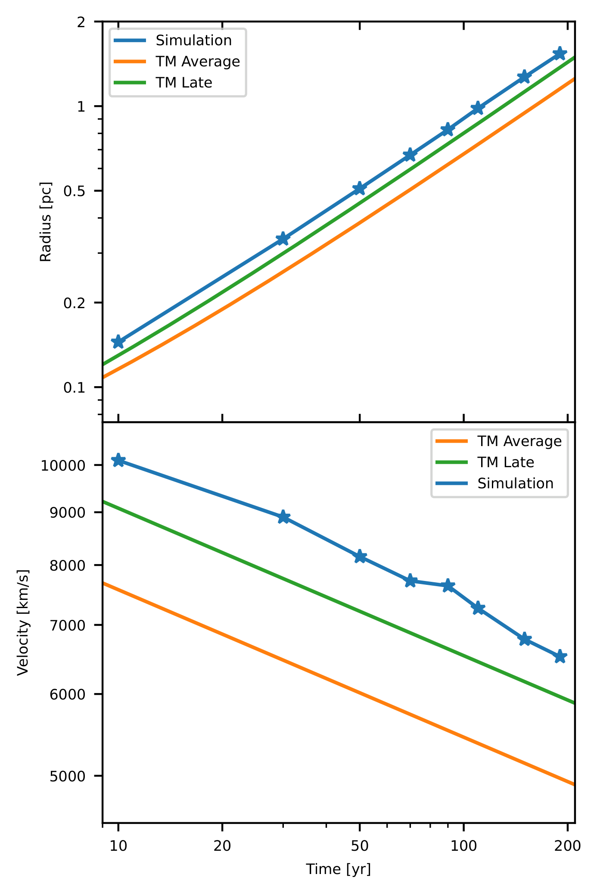
图注：Evolution of RSG simulation forward shock radius (upper panel) and shock velocity (lower panel) vs time up to the WTS. The profile is calculated along an exemplary diagonal ray from the origin in the $[+x,-y,+z]$ direction. Predictions from the model of \cite{TrueloveMcKee1999} are also shown for the average and late cases as discussed in the main text. All velocities are in the centre-of-explosion frame.
对应解读：建议重点查看的图表 4；关键图表逐图导读图 4；模型拟合段落中的正向激波半径与速度诊断。
入选理由：这是 RSG 爆后正向激波半径和速度随时间演化的核心图，并直接叠加 Truelove & McKee 解析模型预测，最能支撑日报中“RSG 光电离加速使模拟激波快于简单解析预期”的关键结论。
来源与置信度：arxiv_source；high；arxiv_source / aanda.tex:figure[11]
Fig12
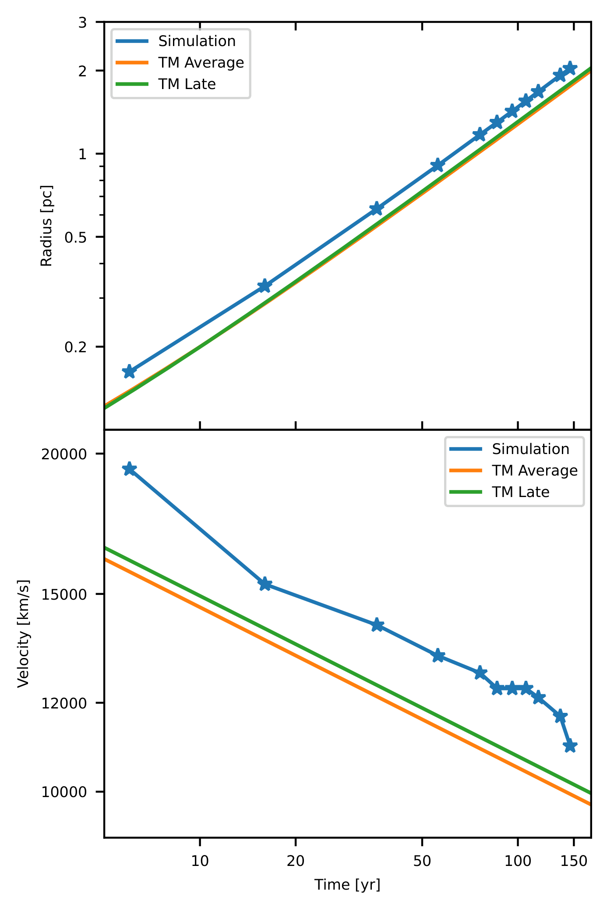
图注：As Fig. \ref{fig:VshRsh_RSG} for the WR simulation.
对应解读：建议重点查看的图表 4 和 6；关键图表逐图导读图 4；WR 模型中 CSM 膨胀与激波速度偏离解析估计的讨论。
入选理由：该图是 WR 模型对应的正向激波半径和速度演化图，是检验 WR CSM 膨胀导致速度高于忽略膨胀解析估计的直接证据，也与反射激波影响动力学的讨论密切相关。
来源与置信度：arxiv_source；high；arxiv_source / aanda.tex:figure[12]
Fig01
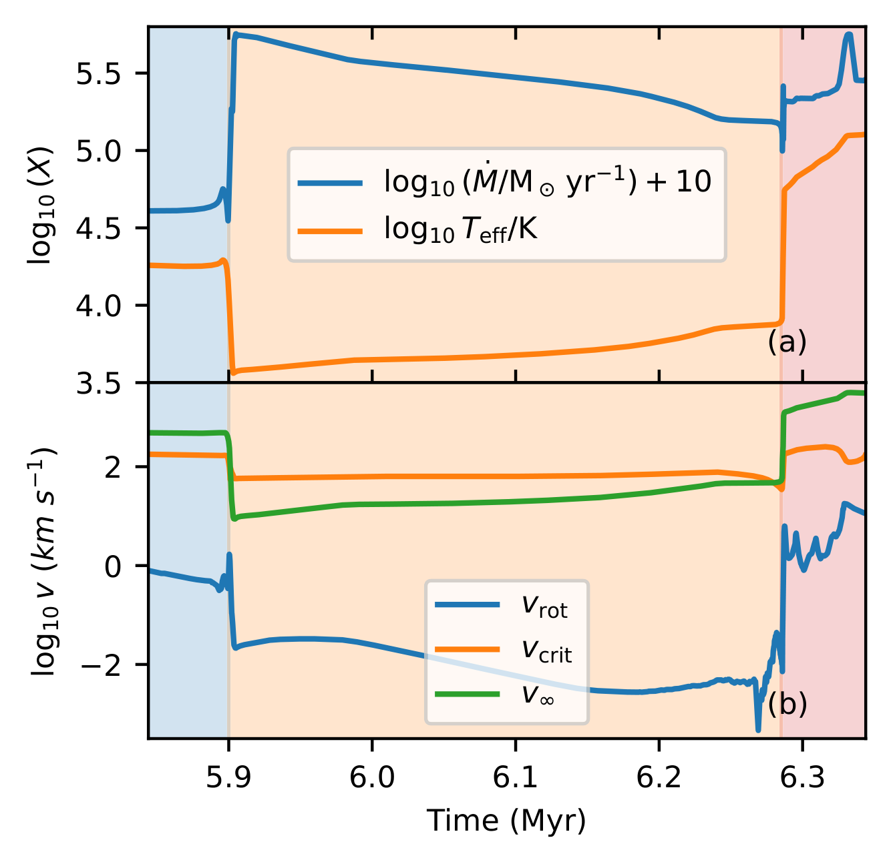
图注：Stellar parameters for the last 500\,kyr of our evolutionary track. The blue, orange and red shading denote the main sequence, RSG and WR phases respectively. (a) Mass loss rate and surface temperature vs time since ZAMS. (b) Rotation velocity, critical rotation velocity and wind velocity vs time since ZAMS.
对应解读：建议重点查看的图表 1；关键图表逐图导读图 1。
入选理由：图中给出最后 500 kyr 的质量损失率、表面温度、旋转速度和风速，并标出主序、RSG、WR 阶段，是理解后续 CSM 壳层、风终止激波和 WR 快风扫掠 RSG 慢风的前提。
来源与置信度：arxiv_source；high；arxiv_source / aanda.tex:figure[1]
Fig04
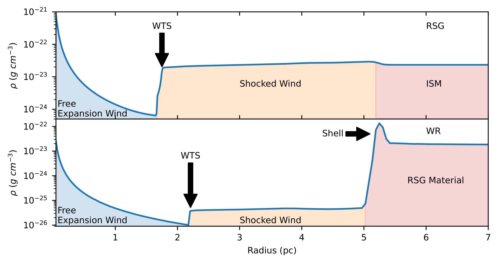
图注：Radial profile of density for the RSG simulation (upper panel) and WR simulation (lower panel) before the SN is inserted. The profile is calculated along a diagonal ray from the origin in the $[+x,-y,+z]$ direction.
对应解读：建议重点查看的图表 2；关键图表逐图导读图 2。
入选理由：该图直接给出 RSG 与 WR 爆前 CSM 密度径向剖面，可用于识别自由风区、壳层和密度跃迁位置，是连接恒星风历史与超新星激波传播环境的关键结构图。
来源与置信度：arxiv_source；high；arxiv_source / aanda.tex:figure[4]
Fig09
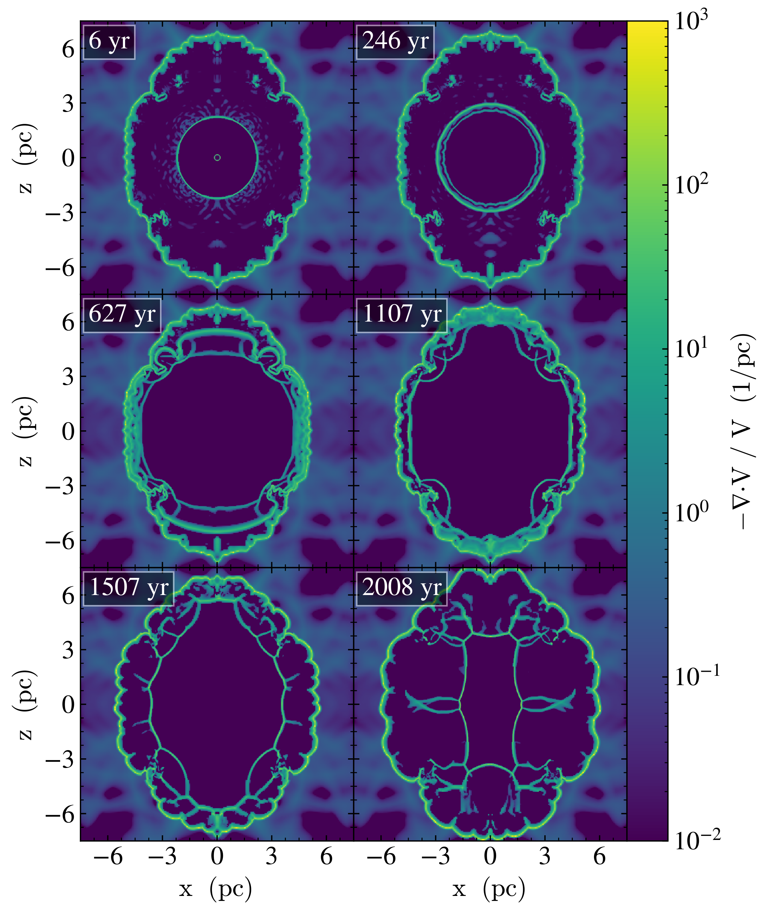
图注：XZ-plane slice of $-\nabla\cdot \mathbf{V} / \mathbf{V}$ for selected times of the WR simulation.
对应解读：建议重点查看的图表 3 和 6；WR 反射激波诊断图。
入选理由：WR 模型的二维压缩/激波诊断量切片比单纯密度图更适合定位快速反射激波及其相干结构，直接支撑日报中关于 WR 模型产生一组相干快速反射激波的解读。
来源与置信度：arxiv_source；high；arxiv_source / aanda.tex:figure[9]
Fig10
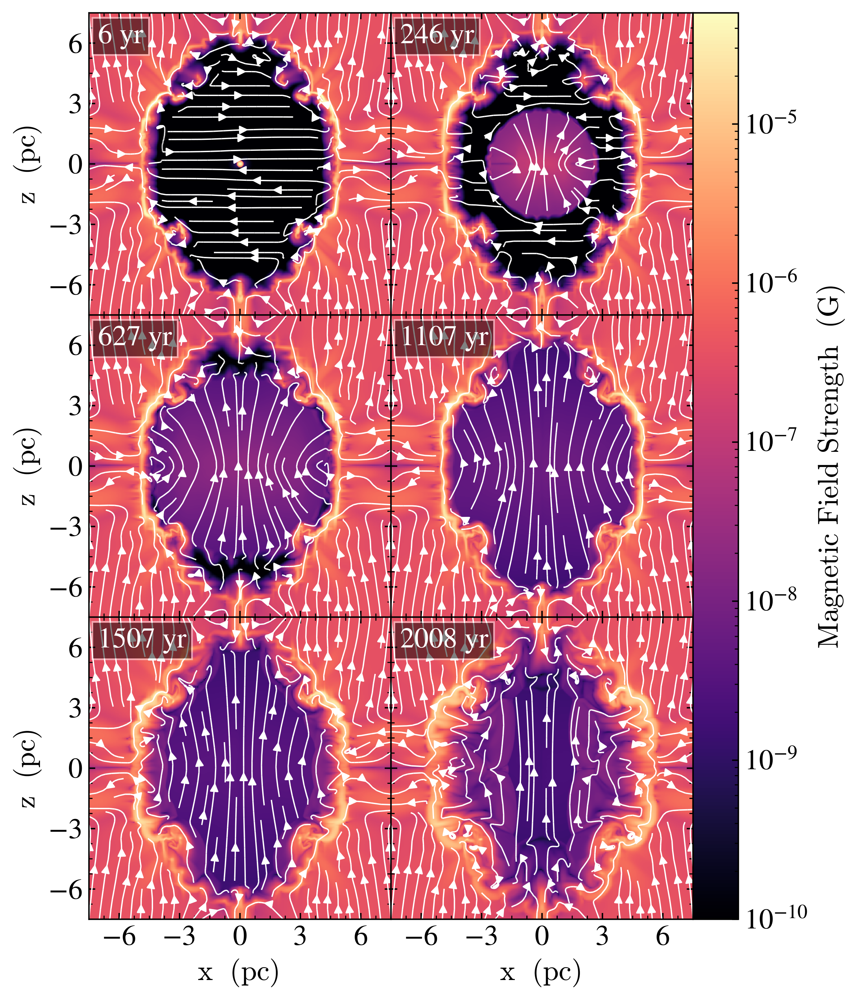
图注：XZ-plane slice of magnetic field strength and streamlines of in-plane magnetic field direction for selected times of the WR simulation.
对应解读：建议重点查看的图表 5；关键图表逐图导读图 5；弱磁化与 PeV 加速能力讨论。
入选理由：该图展示 WR 模型中磁场强度空间分布和磁力线方向，可用于判断激波附近磁场是否显著增强，以及弱磁化风泡对最高粒子能量限制的结论是否来自大尺度场结构。
来源与置信度：arxiv_source；high；arxiv_source / aanda.tex:figure[10]
强相关工作
这篇工作与 Chevalier 类型的自相似 SNR 理论直接相关。经典理论把抛射物和外介质都近似为幂律密度，给出激波半径随时间的标度关系，是解释年轻 SNR 的基础工具。本文不是否定这些解析模型，而是指出在真实核心坍缩 CSM 中，光电离、风泡膨胀、冷却壳层和多维不稳定性会让解析标度出现系统偏差。检索关键词可用：Chevalier self-similar supernova remnant circumstellar medium；core-collapse SNR wind bubble；ejecta power-law CSM interaction。
它也与大质量星风泡和 WR 环星壳层模拟有关。此前许多工作研究过主序星、RSG、WR 风的相互作用，以及风泡结构如何影响超新星遗迹；本文的增量在于结合详细恒星演化输入和多维 MHD，并强调磁场对 PeVatron 潜力的限制。检索关键词可用：Wolf-Rayet wind bubble MHD supernova remnant；red supergiant wind photoionization SNR；PION code stellar wind bubble。
潜在张力主要来自两个方向。第一，一些年轻 SNR 的非热 X 射线细丝和 TeV 辐射常被解释为强磁场放大和高效粒子加速，本文的慢自转前身星弱磁化结论可能要求额外的宇宙线驱动磁场放大机制。第二，观测个例可能受双星相互作用或爆前 eruptive mass loss 支配，而本文选取的单星或慢自转轨道未必覆盖这些极端环境。检索关键词可用：young supernova remnants PeVatron magnetic field amplification；Cas A circumstellar medium binary progenitor；cosmic ray streaming instability SNR。
相似工作：
- https://arxiv.org/abs/2605.04940
- https://ui.adsabs.harvard.edu/search/q=Wolf-Rayet%20wind%20bubble%20MHD%20supernova%20remnant
- https://ui.adsabs.harvard.edu/search/q=red%20supergiant%20wind%20photoionization%20supernova%20remnant
基础理论 / 方法工作：
- https://ui.adsabs.harvard.edu/abs/1982ApJ...258..790C/abstract
- https://ui.adsabs.harvard.edu/abs/1977ApJ...218..377W/abstract
- https://ui.adsabs.harvard.edu/search/q=Sedov%20Taylor%20supernova%20remnant%20blast%20wave
相反观点 / 张力线索：
- https://ui.adsabs.harvard.edu/search/q=young%20supernova%20remnant%20PeVatron%20magnetic%20field%20amplification
- https://ui.adsabs.harvard.edu/search/q=Cas%20A%20circumstellar%20medium%20progenitor%20wind
- https://ui.adsabs.harvard.edu/search/q=cosmic%20ray%20streaming%20instability%20supernova%20remnants
3. Are PTA measurements sensitive to gravitational wave non-Gaussianities?
- 来源：arXiv / astro-ph.HE
- 链接：https://arxiv.org/abs/2605.05157v1
- 作者：Chiara Cecchini, Jonas El Gammal, Gabriele Franciolini, Mauro Pieroni
- 评分：novelty 7/10，importance 7/10，relevance 7/10，final 8.00/10
- 推荐理由：Astro-ph.HE/PTA gravitational-wave analysis arguing that model-agnostic non-Gaussianity tests cannot robustly distinguish astrophysical from cosmological stochastic backgrounds. A useful cautionary methodological result for PTA interpretation.
中文题目：PTA 能测到引力波背景的非高斯性吗？
做了什么：这篇文章问的是：脉冲星计时阵列（PTA）中已看到的纳赫兹引力波背景，能否仅凭计时残差的统计非高斯性来区分天体物理起源和宇宙学起源。作者构造了理想化的、信号占优的 PTA 数据，并特别强调必须先对数据做去相关处理，否则不同脉冲星和不同频率模式之间的相关性会制造“伪非高斯”探测。结论相当负面：在不强加引力波谱形、源族群性质或具体非高斯模板的情况下，常用统计检验无法以模型无关方式区分高斯和非高斯引力波背景；真正有辨识力的非高斯特征会被 PTA 的投影、有限模数和去相关处理洗掉。
为什么重要：PTA 领域正在从“是否存在共同红噪声/ Hellings–Downs 相关”转向“这个背景从哪里来”。非高斯性被认为可能区分大量超大质量黑洞双星叠加产生的背景、少数明亮源主导的背景、相变或宇宙弦等早期宇宙机制。这篇文章的重要性在于提醒：非高斯性不是一个自动可用的判别器，若没有明确的物理先验和统计模型，PTA 数据中的非高斯检验很容易失去解释力。
理论 / 观测 / 仪器方法价值：对理论而言，它限制了“用模型无关非高斯性判别起源”的乐观说法，迫使宇宙学和天体物理模型给出更具体的谱形、各向异性、源计数或高阶相关函数预测。对观测而言，它强调去相关、白化、频域投影和检验统计量选择对结论至关重要。对方法而言，它把 PTA 非高斯分析从简单的偏度、峰度或正态性检验，推向基于似然、源族群和具体高阶相关结构的端到端建模。
为什么应该关注：如果你关心 PTA 是否能区分超大质量黑洞双星背景和早期宇宙背景，这篇文章给出一个清醒的下限判断：仅仅在残差里找“非高斯味道”大概率不够。未来真正有用的信息可能来自谱形、各向异性、单源可分辨性、时间演化、与电磁观测交叉匹配，或针对特定宇宙学机制的高阶统计量，而不是通用正态性检验。
展开详细解读：文章讲解、背景、理论、重点章节、图表与相关工作
文章详细讲解
科学问题：PTA 测量的是许多毫秒脉冲星到达时残差中的共同低频信号。若背景由海量弱源叠加，根据中心极限定理通常近似高斯；若由少数源、强烈离散源族群、宇宙弦尖点/拐点爆发、相变残余等贡献，则可能出现非高斯性。因此，近年有观点认为，在 PTA 残差中检验非高斯性可以帮助区分天体物理和宇宙学起源。本文的核心问题是：这种判别能否在不指定具体模型的情况下成立？
作者怎么做：文章考虑理想化的信号占优场景，目的是避免把结论归咎于仪器噪声或当前数据灵敏度不足。他们把 PTA 数据看作由引力波背景协方差诱导的多脉冲星、多时间采样随机过程，并讨论若直接对原始残差套用非高斯检验，会因为 Hellings–Downs 空间相关、红谱时间相关、计时模型拟合投影等产生虚假的非独立性。为避免伪探测，必须对白化或去相关后的独立模式进行检验。
关键结果：一旦恰当地去相关，许多看似能区分高斯/非高斯背景的统计量会失去灵敏度。原因不是所有非高斯背景都在数学上等价于高斯背景，而是 PTA 可观测量经过有限采样、角相关投影、频率压缩和去相关变换后，模型无关的高阶特征被大幅平均。若不假设谱形、源数分布、明亮源截断、宇宙弦爆发率等，统计检验只能看到很弱、不可唯一解释的偏离。
局限和下一步：这并不意味着 PTA 永远测不到非高斯性，而是说“通用正态性检验”不是可靠路线。下一步应针对具体模型构造似然或模拟库，例如少数超大质量黑洞双星主导的 shot noise 背景、宇宙弦 burst 背景、非平稳背景，或者联合利用单源搜索、各向异性、多频谱形和高阶相关函数。当前结论也提示，未来 IPTA/SKA 时代数据增加后，分析收益仍取决于物理模板是否足够明确。
背景知识
PTA 通过监测毫秒脉冲星脉冲到达时间的纳秒到微秒级偏差，寻找纳赫兹频段引力波。该频段最自然的天体物理来源是宇宙中大量超大质量黑洞双星的随机叠加；宇宙学来源则包括一阶相变、宇宙弦、暴胀后过程等。近年 NANOGrav、EPTA、PPTA、CPTA 和 IPTA 相关结果已给出共同红噪声和 Hellings–Downs 角相关的证据，使“背景起源”成为下一阶段核心问题。
历史上，随机背景通常首先用二阶统计描述，即功率谱和不同脉冲星之间的角相关。高斯随机场完全由二阶统计决定，因此高斯假设让分析简洁可控。但真实天体物理源族群未必完全高斯：如果在某一频率 bin 内有效源数不多，或少数近邻/大质量双星贡献显著，背景会表现出非高斯性、各向异性或时间上的非平稳性。宇宙弦等模型也可能产生稀疏 burst，使残差分布出现重尾。
为什么现在值得重新看：PTA 已经从上限时代进入探测时代，社区自然想寻找超过功率谱的诊断量。非高斯性听起来很有吸引力，因为它似乎能直接回答“是许多源的平滑海洋，还是少数事件/特殊早期宇宙过程”。但常见误区是把“物理背景非高斯”和“在 PTA 残差中容易检出非高斯”等同起来。PTA 数据不是直接采样引力波场，而是经过天线响应、时间积分、计时模型拟合、噪声协方差和有限脉冲星阵列投影后的低维观测。
基础理论 / 方法脉络
核心物理图像是：引力波背景在每个脉冲星方向上诱导到达时残差，残差之间的相关性由广义 Hellings–Downs 函数给出。若背景各向同性、无偏振异常、广义相对论张量偏振占主导，则两个脉冲星的残差互相关只依赖它们的角距。PTA 对背景的最稳健探测量通常是这种二阶空间相关，而非单个脉冲星残差分布形状。
关键量包括残差向量、协方差矩阵、功率谱密度、角相关矩阵和去相关后的模式。红噪声背景在低频有更大功率，因此时间采样点不是独立样本；不同脉冲星残差也因共同背景相关。若直接计算偏度、峰度、Kolmogorov–Smirnov 或 Shapiro–Wilk 这类正态性检验，样本相关性会改变零假设分布，导致显著性被高估。
分析逻辑上，必须先根据协方差矩阵对白化或对角化，使检验统计量作用在近似独立、单位方差的变量上。但这个步骤也会把原始高阶结构投影到少数线性组合里，并去掉许多由二阶相关产生的形态信息。常见 degeneracy 在于：谱指数变化、少数频率 bin 的强信号、脉冲星红噪声误建模、时钟/星历误差和真实非高斯重尾，都可能在残差层面产生类似的异常。
公式与推导
PTA 残差可写成信号与噪声之和：
其中 \(a\) 标记脉冲星，\(t_i\) 是观测历元，\(s_a\) 是引力波背景诱导残差，\(n_a\) 包括白噪声、红噪声、色散延迟和计时模型误差。
在高斯、各向同性背景假设下，全部信息由协方差给出：
这里 \(\Gamma_{ab}\) 是 Hellings–Downs 角相关，\(C_{\rm gw}\) 是由引力波功率谱决定的时间协方差，\(N\) 是噪声协方差。
背景常用特征应变谱描述：
其中 \(A_{\rm gw}\) 是参考频率 \(f_{\rm yr}=1/{\rm yr}\) 处振幅，\(\alpha=-2/3\) 常对应圆轨道、引力波驱动的超大质量黑洞双星族群。
残差功率谱与特征应变近似满足：
其中 \(f^{-3}\) 来自引力波频率扰动到计时残差的时间积分，因此 PTA 背景表现为强红噪声。
若要检验非高斯性，通常先对白化变量：
\(\mathbf{C}^{-1/2}\) 是协方差矩阵平方根的逆。对白化后的 \(x_i\) 做正态性检验可避免把二阶相关误判为非高斯。
非高斯性的最低阶诊断可由四阶连通函数表示：
高斯场的 \(\kappa_{ijkl}=0\)。本文的要点是，在 PTA 可观测的有限白化模式中，若不指定 \(\kappa\) 的模型形状，统计功效很低。
模型拟合 / 应用方法
这类问题的基线拟合通常是层级贝叶斯 PTA 似然：给定噪声参数、引力波谱参数和空间相关模型，残差向量服从多元高斯分布，似然由协方差矩阵行列式和二次型决定。若要加入非高斯性，可以改用混合分布、Student-t 分布、显式源族群模拟、泊松 shot-noise 模型，或在频域中对少数强源单独建模。
本文强调的关键不是某个具体后验数值，而是检验统计量的校准。若残差未去相关，偏度/峰度的零分布不再是独立同分布样本的标准结果，显著性会虚高。若去相关，虽然统计上更干净，但许多原来可见的结构被吸收到协方差模型或白化变换中，剩下的模型无关非高斯信号很弱。
实际应用中，应把残差图、白化残差图、频率 bin 后验、单脉冲星红噪声后验和共同过程后验一起看。非高斯候选若只在少数脉冲星、少数历元或未建模噪声通道中出现，更可能是系统误差。真正有物理意义的非高斯模型需要给出可计算似然或模拟校准的后验预测分布，并与高斯 GWB、各向异性 GWB、单源模型和星历误差模型比较 Bayes 因子或预测残差。
重点章节 / 结果段落怎么读
-
引言和问题设定：重点看作者如何定义“模型无关非高斯性”以及他们反驳的是哪类主张。不要把结论误读为“任何 PTA 非高斯性都不可测”，而是“通用统计检验缺乏判别力”。
-
PTA 数据与协方差结构：这里应关注残差向量、Hellings–Downs 相关、红谱时间相关和噪声项如何进入协方差。读者要确认作者是否使用了信号占优的理想设定，以及这种设定为何反而使负面结论更强。
-
去相关/白化步骤：这是全文技术核心。应检查作者如何构造独立模式、如何避免由相关样本导致的伪非高斯显著性，以及不同去相关方案是否影响结论。
-
非高斯检验与模拟：关注检验统计量在高斯和非高斯注入下的分布重叠程度。真正重要的是统计功效，而不只是某个 p 值。
-
讨论和展望：看作者如何限定结论适用范围，尤其是对具体源族群模型、单源搜索、各向异性和未来更大 PTA 的态度。
建议重点查看的图表
-
高斯与非高斯模拟残差的原始分布对比：看未经白化时是否已有明显分布差异，以及这些差异是否可能来自相关性。
-
白化/去相关后变量的直方图或 QQ 图：重点看高斯和非高斯样本是否在尾部仍可分辨，置信带是否大幅重叠。
-
检验统计量分布：比较零假设与非高斯注入的统计量分布，关键是重叠面积和给定显著性下的检出率。
-
对谱形或源族群假设的敏感性图：看在固定/放松功率谱假设后，非高斯检验功效是否迅速下降。
-
模式数或脉冲星数依赖：若有此类图，应看灵敏度是否随阵列规模按直觉增长，还是受有限低频模式限制。
-
假阳性诊断：看未去相关检验是否产生伪显著性，以及白化后 p 值是否回到均匀分布。
关键图表逐图导读
图 1：通常应是 PTA 模拟或分析流程示意。横轴/纵轴可能不是物理坐标，而是从引力波背景到残差、协方差、白化变量、统计检验的流程。读图重点是作者在哪一步去除了二阶相关；陷阱是把原始残差的视觉非高斯性当成最终证据。
图 2：若展示原始残差或频域模式分布，横轴可能是残差幅度或标准化幅度，纵轴是概率密度/计数。模型线可能包括高斯背景和非高斯背景。要看差异是否主要来自红噪声相关或少数大振幅模式，而不是独立样本的真实重尾。
图 3：白化后 QQ 图或直方图最关键。横轴可为理论高斯分位数，纵轴为样本分位数；若点落在置信带内，说明通用正态性检验难以拒绝高斯。陷阱是只盯最远端几个点而忽略多重检验和有限样本波动。
图 4：检验统计量分布或 ROC/功效曲线。横轴可能是统计量阈值或假阳性率，纵轴是假阴性率/检出率。若高斯与非高斯曲线高度重叠，就支持作者结论。要特别注意这些曲线是在已知谱形还是边缘化谱形后得到的。
图 5：参数依赖或稳健性图。横轴可能是非高斯强度、有效源数、谱指数或信噪比，纵轴是检出概率。读图陷阱是把强先验、极端非高斯或已知模板下的可检出性外推到模型无关场景。
论文原图 / 可嵌入图片
Fig01
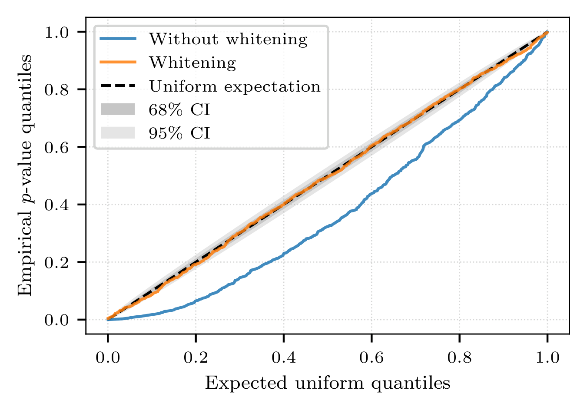
图注：QQ plot of $p$-values obtained under the isotropic Gaussian null hypothesis on the diagonal powers before (blue) and after (orange) whitening, compared to the theoretical expectation (dashed-black) with $68\%$ and $95\%$ confidence intervals (gray shaded bands).
对应解读：对应“建议重点查看的图表”第2、6项，以及“关键图表逐图导读”中关于白化/去相关后 p 值、QQ 图和假阳性诊断的部分。
入选理由：该图直接比较未白化与白化后的 p 值 QQ 分布，并给出理论期望及68%、95%置信带，是检验作者核心论点的首要图：未去相关时可能出现伪显著性，而白化后 p 值应回到与零假设一致的分布。它最能支撑日报中关于‘去相关是避免虚假非高斯探测的关键’这一解读。
来源与置信度：arxiv_source；high；arxiv_source / main.tex:figure[1]
Fig02
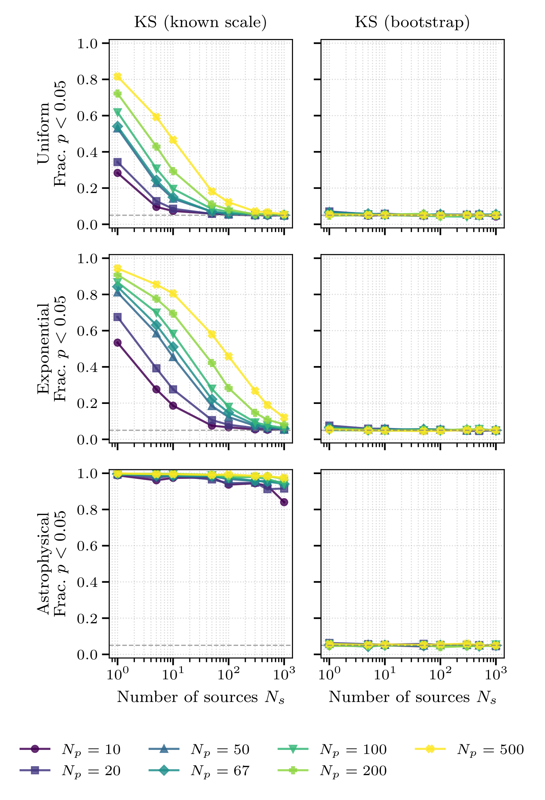
图注：Rejection fractions for KS tests applied to whitened diagonal powers. The left column shows the known-scale reference test, while the right column shows the bootstrap-calibrated KS test after estimating the overall scale from the same realization. The first (second) row uses a toy population with uniform (exponential) source amplitudes; the bottom row uses the semi-analytic astrophysical population model with fixed source count.
对应解读：对应“建议重点查看的图表”第3、4项，以及“关键图表逐图导读”中关于检验统计量分布/检出功效、已知尺度与自举校准后功效下降的讨论。
入选理由：该图展示对白化后的对角功率进行 KS 检验的拒绝率，并区分已知尺度参考检验与从同一 realization 估计尺度后的 bootstrap 校准检验，还比较了不同源幅度分布和半解析天体物理族群模型。它直接量化非高斯注入在实际校准后是否仍能被检出，是判断‘模型无关非高斯检验灵敏度被洗掉’的关键证据。
来源与置信度：arxiv_source；high；arxiv_source / main.tex:figure[2]
Fig03
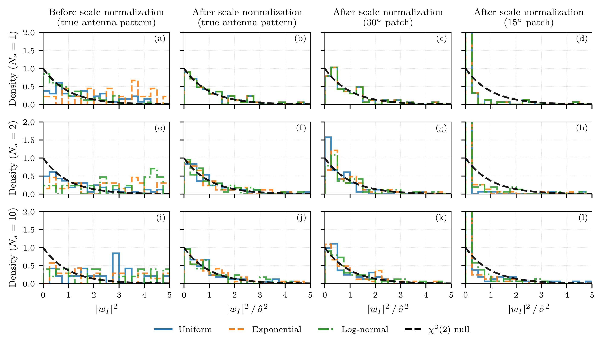
图注：Impact of the scale estimation and angular resolution of the response function for $N_s = 1, 2,$ and $10$ sources (first, second, and third row, respectively). First column: Amplitude PDF for the uniform (solid blue lines), log-normal (dash-dotted green lines), and exponential distribution (dashed orange lines), compared to the expected null (dashed black lines) before scale normalization using the true PTA antenna pattern. Second column: Same plot after scale normalization. Third (fourth) column: Same plot replacing the PTA antenna pattern with a synthetic response with a single $30^\circ$ ($15^\circ$) sky patch (see~\cref{fig:antenna_patterns} in the supplemental material).
对应解读：对应“建议重点查看的图表”第4、5项，以及“关键图表逐图导读”中关于源数、幅度分布、尺度估计和角响应分辨率如何影响非高斯可见性的部分。
入选理由：该图系统比较不同源数 Ns=1、2、10，不同幅度 PDF，以及尺度归一化前后和真实/合成天线响应下的幅度分布变化。它揭示了许多可见的非高斯结构会被尺度估计、PTA 天线响应和有限角分辨率吸收或平均掉，比单纯的示意图更能支撑日报中关于‘强先验或极端源族群下的可检出性不能外推到模型无关场景’的判断。
来源与置信度：arxiv_source；high；arxiv_source / main.tex:figure[3]
Fig04
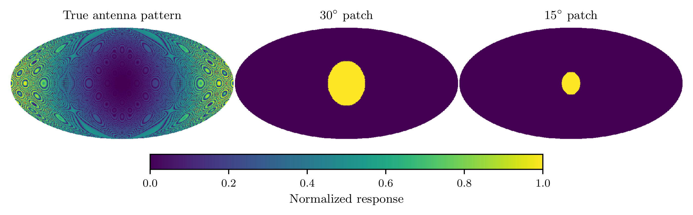
图注：Single-pulsar sky responses shown in the standard Mollweide projection. The left panel is the true PTA antenna pattern at $f=1 / T_{\rm obs}$ with $T_{\rm obs} = 16.03\,\mathrm{yrs}$, normalized to its maximum over the sky. The middle and right panels show the synthetic $30^\circ$ and $15^\circ$ patch responses used for the examples in~\cref{fig:scale_estimation_cdf}.
对应解读：对应“建议重点查看的图表”第4项，以及 Fig03 中关于 PTA 天线响应、合成 30°/15° sky patch 响应对非高斯诊断影响的辅助说明。
入选理由：该图本身不是统计检验结果，但给出了真实 PTA 单脉冲星天线图样和用于 Fig03 的合成角响应，是理解角响应分辨率为何会改变幅度 PDF 与检验功效的必要背景。相较 Fig01–Fig03 科学结论性较弱，但可作为解释 Fig03 物理含义的辅助嵌图。
来源与置信度：arxiv_source；high；arxiv_source / main.tex:figure[4]
强相关工作
这篇工作直接处在 PTA 随机背景起源判别的讨论中。NANOGrav 15 年、EPTA/InPTA、PPTA、CPTA 等结果建立了共同红噪声和 Hellings–Downs 相关的证据，但它们主要仍是二阶统计探测。与这些工作相比，本文关注的是高阶统计能否在不指定物理模型时提供额外判别力。建议检索关键词：PTA stochastic gravitational wave background non-Gaussianity, Hellings-Downs correlation, NANOGrav 15-year gravitational wave background。
相近方向包括：超大质量黑洞双星背景的非高斯 shot noise、各向异性背景、可分辨连续波源、宇宙弦 burst 背景、相变引力波背景。相反或更乐观的观点通常认为，少数源主导或宇宙弦等稀疏事件会在 PTA 数据中留下非高斯尾部；本文则指出，若不把这些具体物理信息写进模型，通用检验很难利用它们。建议检索关键词：SMBHB popcorn background PTA, cosmic strings PTA bursts, anisotropic gravitational wave background PTA, higher-order correlations stochastic background。
相似工作：
- https://arxiv.org/abs/2306.16213
- https://arxiv.org/abs/2306.16214
- https://arxiv.org/abs/2306.16215
基础理论 / 方法工作：
- https://doi.org/10.1086/160822
- https://arxiv.org/abs/1309.7393
相反观点 / 张力线索：
- https://arxiv.org/abs/2605.05157
4. The one and the only: the pulsar - white dwarf system in NGC 6749
- 来源：arXiv / astro-ph.HE
- 链接：https://arxiv.org/abs/2605.04988v1
- 作者：Paulo C. C. Freire, Yinfeng Dai, Mario Cadelano, Cristina Pallanca, Zurong Zhou, Zhichen Pan, Luca Rosignoli, Davide Massari
- 评分：novelty 5/10，importance 6/10，relevance 7/10，final 7.05/10
- 推荐理由：Pulsar timing and optical companion characterization of an MSP-WD system in/near NGC 6749 using long-baseline Arecibo+FAST data. Scientifically useful for pulsar and globular-cluster specialists, though not a broadly transformative result.
中文题目：NGC 6749 中唯一确认的脉冲星—白矮星系统
做了什么：这篇文章对球状星团 NGC 6749 中的双星毫秒脉冲星 PSR J1905+0154A 做了 20 年相干计时，并结合 Arecibo 早期数据、FAST 后续观测和 HST 光学资料，给出精确的天体测量、自转和轨道参数。该系统自转周期 3.2 ms，轨道周期 0.81 天，伴星是低质量氦白矮星候选体，质量约 0.17–0.19 个太阳质量，冷却年龄约 0.4–0.7 Gyr。脉冲星的内禀磁场和特征年龄与银河场毫秒脉冲星相似，但系统相对星团的速度显著且可能超过逃逸速度，引出一个关键疑问：它虽然投影在星团中心附近，却未必真的属于 NGC 6749。
为什么重要：球状星团是毫秒脉冲星形成和动力学加工的实验室，但 NGC 6749 贫乏、消光大、脉冲星样本极少。这个系统是该星团唯一确认的脉冲星，因而每一个参数都对星团脉冲星形成率、动力学保留、低质量白矮星伴星演化和星团成员判定有不成比例的重要性。20 年相干计时使作者能把无线电计时、光学伴星和星团动力学放在同一框架下检验。
理论 / 观测 / 仪器方法价值：对观测而言，论文展示了把 Arecibo 历史数据与 FAST 高灵敏度数据连接成长期相干解的价值，并用 HST 在拥挤、强消光区域识别白矮星伴星。对理论而言，它给出再循环毫秒脉冲星与极低质量氦白矮星演化的一组约束，尤其是白矮星冷却年龄与脉冲星特征年龄之间的比较。对方法而言，它强调球状星团中脉冲星的表观自转减慢受到星团引力加速度影响，必须谨慎反推出内禀磁场和年龄。
为什么应该关注：如果你研究毫秒脉冲星、低质量白矮星、球状星团动力学或 FAST 的长期计时能力，这篇文章都值得看。它不是“大样本统计”论文，而是一个单目标的高信息量案例：同一个系统同时考验脉冲星计时、白矮星冷却模型、星团成员身份、逃逸速度和再循环历史。尤其是“看起来在星团里但可能不是成员”的结论，会影响人们如何使用球状星团脉冲星样本做动力学和形成率推断。
展开详细解读：文章讲解、背景、理论、重点章节、图表与相关工作
文章详细讲解
科学问题：PSR J1905+0154A 是 NGC 6749 中唯一确认的毫秒脉冲星，早在 2004 年由 Arecibo 球状星团巡天发现。问题不仅是给出更精确的自转和轨道参数，还包括：它的伴星是否能在 HST 数据中识别？脉冲星的内禀自转减慢在星团引力场修正后是多少？白矮星冷却年龄与脉冲星特征年龄是否一致？最重要的是，它到底是不是 NGC 6749 的真实成员？
作者怎么做：他们把早期 Arecibo 观测与后来的 FAST 数据合并，建立横跨约 20 年的相干计时解。长时间基线允许精确测量位置、周期、周期导数、轨道周期、投影半长轴、偏心率等。随后，作者利用 NGC 6749 的 HST 数据，在计时位置附近寻找光学伴星候选，并将其放到颜色—星等图上，与低质量氦白矮星冷却轨迹比较。
关键结果：计时显示该系统是低偏心率、0.81 天轨道的毫秒脉冲星—低质量白矮星双星。星团引力场可造成视线加速度，从而污染观测到的周期导数；但 NGC 6749 可允许的加速度范围较小，使作者能够估计内禀自转减慢，并得到表面磁场约 \(2.2-2.4\times10^8\) G、特征年龄约 2.8–3.5 Gyr，符合典型场毫秒脉冲星。光学候选体位置与氦白矮星相容，质量约 0.17–0.19 \(M_\odot\)，冷却年龄 0.4–0.7 Gyr，温度约 11600–14800 K。将冷却年龄与脉冲星自转演化比较，推得白矮星开始冷却时脉冲星自转周期约 2.7 ms。
局限和下一步：最大的悬念是成员身份。系统相对星团的速度达到 4.5σ 显著，且量级上超过逃逸速度；这可能说明它不是星团成员，或者存在复杂动力学历史、测量系统误差、星团参数误差或偶然投影。作者还尝试确认第二个候选脉冲星并搜索更多脉冲星，但没有成功。下一步需要更长 FAST 计时、更好的自行/视差约束、更精细的星团质量模型，以及更深的光学/红外数据来检验伴星和成员身份。
背景知识
毫秒脉冲星通常被认为是老中子星在低质量 X 射线双星阶段通过吸积角动量“再循环”而来。吸积结束后，剥离后的伴星常成为低质量氦白矮星。系统的轨道周期、白矮星质量、自转周期和磁场共同记录了质量转移历史。球状星团中恒星密度高，双星交换、遭遇和潮汐扰动频繁，因此既能高效形成脉冲星双星，也会改变它们的轨道和空间分布。
NGC 6749 是一个观测上困难的球状星团：位于银河平面附近，消光和拥挤严重，恒星族群参数、距离和动力学结构的不确定性都较大。该星团并不像 Terzan 5、47 Tuc 那样拥有大量已知脉冲星，因此 PSR J1905+0154A 几乎承担了全部“脉冲星视角”的信息。单个系统看似统计意义有限，但在稀有星团中，它能强烈影响我们对星团脉冲星丰度和动力学环境的判断。
该领域常见误区之一，是直接把观测到的 \(\dot P\) 当作脉冲星内禀自转减慢。在球状星团中，星团引力沿视线的加速度、Shklovskii 效应、银河势加速度都会改变表观 \(\dot P\)。另一个误区是只凭投影位置认定成员身份：一个天体落在星团核心附近并不必然属于星团，尤其当自行或横向速度与星团不一致时。第三个误区是把脉冲星特征年龄和白矮星冷却年龄要求严格相等；实际比较需要考虑出生自转周期、制动指数、早期热演化和氢包层燃烧。
基础理论 / 方法脉络
脉冲星计时的基本思想是用一个相位模型预测每个脉冲到达时间，并最小化观测到达时间与模型之间的残差。对双星毫秒脉冲星，模型不仅包括自转频率和自转减慢，还包括轨道运动造成的 Roemer 延迟、可能的 Einstein 延迟和 Shapiro 延迟。低偏心率短周期系统通常采用适合小偏心率的 ELL1 类参数化，避免近心点角在低偏心率下病态。
从计时得到的投影半长轴 \(x=a_p\sin i/c\) 和轨道周期 \(P_b\) 可以计算质量函数。若假设中子星质量范围和轨道倾角分布，就能约束伴星最小质量和典型质量。对于 0.81 天轨道的再循环系统，理论上预期伴星是极低质量氦白矮星，而不是碳氧白矮星；这与 HST 颜色—星等图上的蓝色白矮星候选相吻合。
白矮星光学识别依赖颜色、星等、距离、消光和冷却轨迹。质量较低的氦白矮星可有较厚氢包层，残余氢燃烧会延缓冷却，因此同一颜色/星等对应的年龄依赖模型。成员身份判定则结合计时位置、光学位置、自行速度、星团逃逸速度和背景场星概率。系统误差包括 HST 绝对天体测量、差分消光、星团距离模数、金属丰度和白矮星模型差异。
公式与推导
脉冲星观测周期导数包含多种贡献：
其中 \(\dot P_{\rm int}\) 是内禀磁偶极制动，\(\dot P_{\rm acc}=P a_{\ell}/c\) 来自星团视线加速度，\(\dot P_{\rm Shk}=P\mu^2 d/c\) 是 Shklovskii 效应，\(\dot P_{\rm Gal}\) 是银河势加速度项。
估计出 \(\dot P_{\rm int}\) 后，表面偶极磁场常用近似为：
这里 \(P\) 以秒计，\(\dot P_{\rm int}\) 为无量纲的周期导数。本文得到的 \(B_s\sim2.2-2.4\times10^8\) G 是典型毫秒脉冲星磁场。
特征年龄定义为：
它假设磁偶极制动指数 \(n=3\) 且出生周期远小于当前周期。对毫秒脉冲星这个假设常不严格，因此 \(\tau_c\) 更应视为自转演化时间尺度，而非精确年龄。
双星质量函数为：
其中 \(M_p\) 是中子星质量，\(M_c\) 是伴星质量，\(i\) 是轨道倾角，\(P_b\) 是轨道周期。给定 \(M_p\) 和 \(i\) 的先验即可估计白矮星质量范围。
若采用磁偶极制动且制动指数为 3，自转演化满足：
其中 \(P_0\) 是再循环结束、白矮星开始冷却时的自转周期。令 \(t\) 等于白矮星冷却年龄，可反推出本文所称 \(P_0\sim2.7\) ms。
白矮星冷却比较本质上是把观测星等转成绝对星等：
其中 \(m_\lambda\) 是观测星等，\((m-M)_0\) 是距离模数，\(A_\lambda\) 是该波段消光。再与给定质量、温度和年龄的冷却轨迹比较，得到 \(M_c\)、\(T_{\rm eff}\) 和冷却年龄。
模型拟合 / 应用方法
计时拟合通常通过 TEMPO/TEMPO2 类工具完成，参数包括自转频率、频率导数、天球位置、二元轨道参数以及观测系统间相位跳变。20 年相干解的关键是保持脉冲相位计数不丢失；一旦跨越 Arecibo 与 FAST 数据的相位连接成功，位置和周期导数精度会显著提升。残差应检查是否有未建模红噪声、色散变化、系统跳变或轨道周期变化。
内禀 \(\dot P\) 的估计不是单纯拟合量，而是从观测 \(\dot P\) 中扣除星团加速度、Shklovskii 和银河势项。这里的系统误差主要来自星团质量模型、脉冲星在星团三维位置未知、距离和自行误差。由于 NGC 6749 的可预期加速度范围较小，作者能够给出相对窄的内禀磁场和特征年龄范围，但成员身份不确定会反过来影响这些修正的解释。
光学伴星拟合则是在 HST 颜色—星等图上与白矮星冷却轨迹比较。拟合量包括颜色、星等、位置一致性，隐含参数包括白矮星质量、有效温度、冷却年龄、消光和距离。读残差时要看候选体是否显著偏离主序/背景星分布，是否落在合理的氦白矮星轨迹上，以及位置误差圆内随机星重合概率。成员身份的速度异常则需要把计时/光学自行与星团平均运动、速度弥散和逃逸速度模型联合看。
重点章节 / 结果段落怎么读
-
观测数据与计时解：先读 Arecibo 与 FAST 数据如何合并、时间跨度、TOA 数量和残差质量。重点确认相干计时解是否稳健，以及不同望远镜系统误差如何处理。
-
计时参数与内禀自转减慢：关注 \(P\)、\(\dot P\)、轨道周期、投影半长轴、偏心率和位置。随后看作者如何估计星团引力加速度范围，并由此推导磁场和特征年龄。
-
HST 伴星识别：重点读位置匹配、误差圆、颜色—星等图和白矮星冷却轨迹比较。这里决定了“脉冲星—白矮星系统”的多波段证据强度。
-
年龄与演化讨论：看白矮星冷却年龄如何与脉冲星特征年龄比较，以及为何可推出再循环结束时的自转周期约 2.7 ms。
-
星团成员身份和搜索结果：这是结论中最有争议的部分。读者应关注相对速度的显著性、逃逸速度估计、非成员可能性，以及第二候选脉冲星未确认和额外搜索无发现的含义。
建议重点查看的图表
-
计时残差随时间图：看 Arecibo 与 FAST 数据是否在同一相干解下无系统偏移，残差是否有长期趋势或红噪声。
-
轨道相位残差或二元模型诊断：检查 0.81 天轨道是否被良好建模，是否有未吸收的轨道周期变化或偏心率信号。
-
脉冲星位置与 HST 图像叠加：看计时误差椭圆、光学候选体位置和周围拥挤程度，判断随机重合风险。
-
颜色—星等图：重点看候选伴星相对主序、白矮星冷却序列和氦白矮星轨迹的位置，以及消光矢量方向。
-
白矮星冷却轨迹拟合图或表：检查质量、温度、冷却年龄置信范围，对距离和消光是否敏感。
-
速度/成员身份诊断：看系统相对星团运动与速度弥散、逃逸速度的比较，4.5σ 显著性是否由单一测量主导。
-
搜索灵敏度或候选确认表：若有，检查第二候选未确认的原因，是灵敏度不足、加速度搜索限制，还是原候选可能为 RFI/噪声。
关键图表逐图导读
图 1：计时残差图通常横轴是 MJD 或年份，纵轴是到达时残差，点的颜色/符号区分 Arecibo 和 FAST。主要结论是 20 年数据能被一个相干计时模型连接。读图陷阱是只看 RMS；还要看早晚数据之间是否有系统性漂移。
图 2：轨道或参数后验诊断图可能展示残差随轨道相位分布，横轴为轨道相位，纵轴为残差。若各相位残差无结构，说明二元模型充分。若在特定相位有偏差，可能暗示未建模 Shapiro 延迟、轨道变化或色散系统误差。
图 3：HST 寻找图一般横轴/纵轴为空间坐标，标出脉冲星计时位置误差圆和候选白矮星。要看候选是否在误差圆内、周围星密度多高、位置配准误差是否已计入。陷阱是把单个接近位置的蓝星自动视为伴星，而忽略随机重合概率。
图 4：颜色—星等图横轴为颜色，纵轴为星等，通常星等向上更亮或向下更亮取决于作图习惯。候选伴星应与氦白矮星冷却轨迹相近。读图重点是误差棒、消光矢量、不同质量轨迹之间的分离；陷阱是低质量白矮星轨迹受氢包层和金属丰度模型影响。
图 5：年龄比较或自转演化图可能横轴为时间/冷却年龄，纵轴为自转周期或周期导数。模型线给出磁偶极制动下从初始周期到当前周期的演化。主要结论是白矮星开始冷却时脉冲星已接近当前周期，约 2.7 ms。
图 6：成员身份图可能横轴为相对自行或速度，纵轴为概率/逃逸速度界限。若数据点显著高于逃逸速度线，则支持非成员或逃逸系统解释。陷阱是逃逸速度依赖星团质量模型和三维位置，投影速度也不是完整空间速度。
论文原图 / 可嵌入图片
Fig02
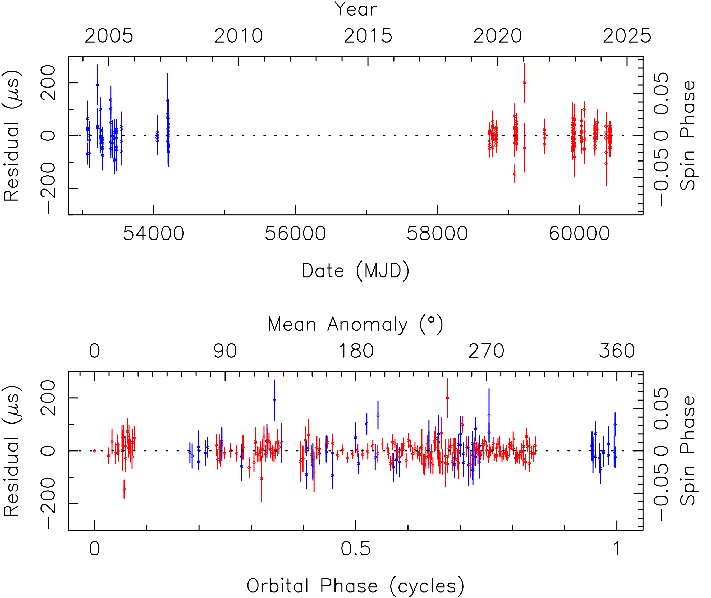
图注：ToA residuals obtained with our set of ToAs and the timing solution in Table~\ref{table:timing_params}. The early ToAs (in blue) were obtained with the Arecibo observing setup; the latter (in red) with the FAST observing setup. The top plot shows the residuals as a function of time, the lower plot shows them as a function of orbital phase relative to ascending node. No trends are visible in the residuals, which means that the timing solution in Table~\ref{table:timing_params} provides a good description of the data. Furthermore, no eclipses are seen at superior conjunction, which occurs at an orbital phase of 0.25.
对应解读：对应“建议重点查看的图表”中的计时残差随时间图和轨道相位残差/二元模型诊断，也对应“关键图表逐图导读”的图1、图2以及计时拟合段落。
入选理由：这张图同时给出残差随时间和随轨道相位的分布，并明确区分 Arecibo 早期数据与 FAST 后期数据，是验证20年相干计时解、检查跨仪器系统偏移、长期趋势、红噪声以及0.81天轨道模型是否充分的核心证据。相比其他候选图，它直接支撑论文最基础的计时解可靠性。
来源与置信度：arxiv_source；high；arxiv_source / clean.tex:figure[2]
Fig04
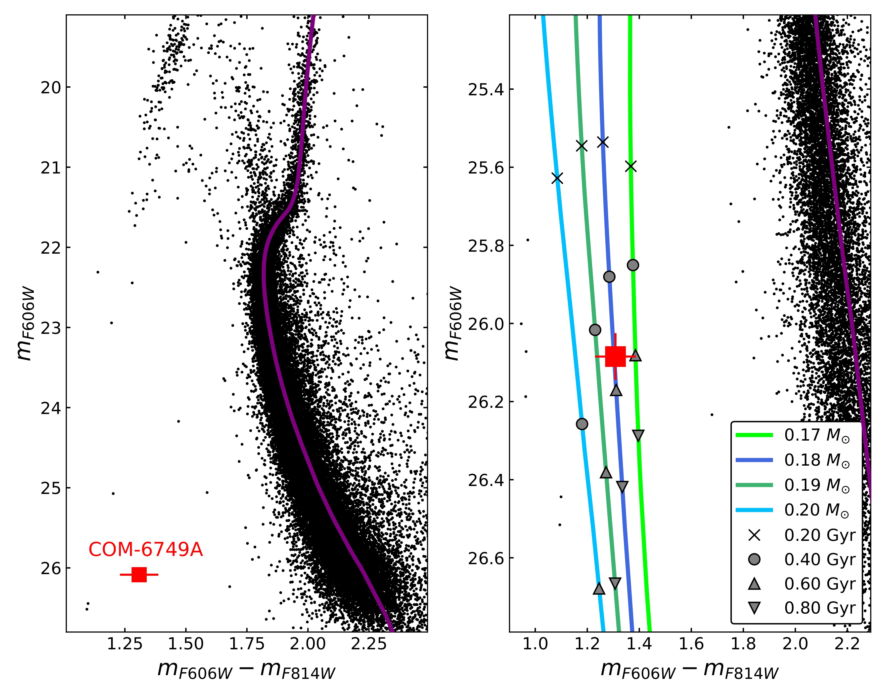
图注：{\it Left-hand panel:} Colour-magnitude diagram of NGC6749 in a combination of the F606W and F814W. The red square is the position of the counterpart to NGC6749A. The purple curve is a 13 Gyr isochrone calculated at the cluster metallicity, distance and extinction. {\it Right-hand panel:} same as the left-hand panel, but zoomed in the companion CMD position. The colored curves are He WD cooling tracks from \citet{Istrate2014,Istrate2016}. The tracks are for WD with masses in the range between $0.17\msun$ and $0.2\msun$, with decreasing masses from left to right, as reported in the legend. Different points are also highlighted with different markers along the tracks corresponding to different cooling ages.
对应解读：对应“建议重点查看的图表”中的颜色—星等图和白矮星冷却轨迹拟合图，也对应“关键图表逐图导读”的图4以及光学伴星拟合段落。
入选理由：这张图展示候选伴星在 HST F606W-F814W 颜色—星等图中的位置，并叠加球状星团等龄线和0.17–0.20太阳质量氦白矮星冷却轨迹，是判断伴星质量、冷却年龄和温度范围的关键图。它直接支撑论文关于候选体为低质量氦白矮星、质量约0.17–0.19太阳质量和冷却年龄0.4–0.7 Gyr的结论。
来源与置信度：arxiv_source；high；arxiv_source / clean.tex:figure[4]
Fig03
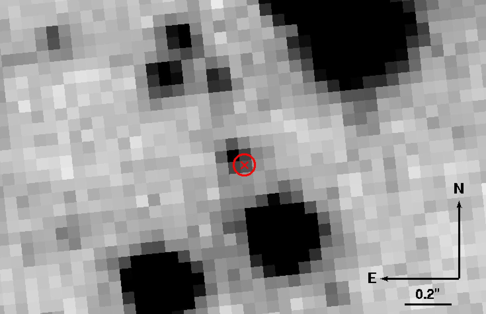
图注：Finding chart of the region surrounding NGC~6749A in the F606W filter. The red cross marks the pulsar position, while the circle represents the 3$\sigma$ uncertainty radius from the combined optical and radio positional error. The only detected star within this region is the candidate companion to the pulsar.
对应解读：对应“建议重点查看的图表”中的脉冲星位置与 HST 图像叠加，也对应“关键图表逐图导读”的图3和光学伴星识别段落。
入选理由：这张 HST 寻找图标出了脉冲星位置、3σ联合位置误差圆以及误差圆内唯一检测到的恒星，是评估光学候选体位置一致性和随机重合风险的直接依据。它与 Fig04 互补：Fig03证明候选体在空间位置上可信，Fig04证明其光度颜色性质与氦白矮星相符。
来源与置信度：arxiv_source；high；arxiv_source / clean.tex:figure[3]
强相关工作
这篇文章与球状星团毫秒脉冲星计时传统密切相关，尤其是 47 Tuc、Terzan 5、M 15 等星团中利用脉冲星 \(\dot P\)、加速度和双星参数约束星团势场与双星演化的工作。不同之处在于 NGC 6749 只有一个确认脉冲星，且成员身份本身可疑，因此它更像一个“边界案例”：同样的方法在低质量、强消光、样本贫乏星团中能给出多少可靠结论？建议检索关键词：globular cluster millisecond pulsars timing acceleration, NGC 6749 PSR J1905+0154A, FAST pulsar timing globular cluster。
相关理论背景包括低质量 X 射线双星再循环、轨道周期—白矮星质量关系、氦白矮星冷却模型和 Shklovskii/星团加速度修正。可能的张力来自脉冲星特征年龄与白矮星冷却年龄不完全一致，以及相对速度超过逃逸速度却投影在星团中心附近。建议检索关键词：helium white dwarf companion millisecond pulsar cooling age, Tauris Savonije period white dwarf mass relation, pulsar proper motion globular cluster membership, Shklovskii effect millisecond pulsars。
相似工作：
- https://arxiv.org/abs/2605.04988
基础理论 / 方法工作：
- https://doi.org/10.1146/annurev.astro.45.051806.110608
- https://doi.org/10.1086/342908
相反观点 / 张力线索：
（未提供）
5. Little red dots as obscured little blue dots: relative abundances, luminosities, and black-hole masses
- 来源：arXiv / astro-ph.HE
- 链接：https://arxiv.org/abs/2605.05074v1
- 作者：Piero Madau, Roberto Maiolino
- 评分：novelty 6/10，importance 7/10，relevance 5/10，final 7.00/10
- 推荐理由：High-redshift AGN/black-hole growth paper proposing an orientation and obscuration unification of little red and blue dots. Not directly gamma-ray/cosmic-ray focused, but relevant to accretion physics and early massive black-hole demographics, with notable authors and clear observational implications.
中文题目：把“小红点”看成被遮蔽的“小蓝点”：相对丰度、光度函数与黑洞质量
做了什么：这篇文章检验一个直接但关键的解释：JWST 在高红移发现的 compact “little red dots”（LRDs，小红点）是否只是蓝色、紧致、宽线活动星系核（作者称为 little blue dots, LBDs）在高倾角视线下被尘埃变红后的对应物，而不是一个全新的天体族群。作者以 z>4 宽线 AGN 的紫外光度函数为母体，加入超爱丁顿吸积盘的各向异性辐射、取向效应、赤道集中的宽线区和环核尘埃云遮蔽，正向模拟观测到的 LRD 光度函数和 LRD/BLAGN 比例。结果显示，一个几何厚吸积流加尘埃云的取向统一模型可以在当前 JWST 约束的光度范围内再现 LRD 的光度函数；LRD/BLAGN 比例随光度强烈变化，在 M1500=-21 约为 3%，在 M1500≈-19 附近升至约 20%，在静止系光学波段的表观比例更高。最佳拟合给出单个云的典型消光
为什么重要：LRD 是 JWST 早期宇宙研究中最容易引发误读的一类源：它们紧致、红、常有宽线，既可能是高红移低质量星系，也可能是被遮蔽的快速生长黑洞。若 LRD 是一种独立的高密度、重黑洞族群，会给早期黑洞种子、星系—黑洞共同演化和再电离时期 AGN 贡献带来很强压力；若它们主要是取向和尘埃选择效应，则许多“过重黑洞”或“异常红 SED”的结论需要重新解释。这篇文章的重要性在于，它没有只拟合单个源的光谱能量分布，而是用光度函数和相对丰度这一人口统计检验来问：同一个 BLAGN 母体能不能同时产生蓝点和红点。
理论 / 观测 / 仪器方法价值：理论价值在于把超爱丁顿吸积几何、各向异性辐射、宽线区取向和尘埃云遮蔽放进同一个可检验的人口模型中，为“little dots”的统一图像给出可量化预测。观测价值在于给出 LRD/BLAGN 比例随 M1500、M4500、M6500 变化的预测，可直接用未来 JWST 深场、NIRSpec/NIRCam 光谱测量和更完整的选择函数来检验。方法价值在于强调光度函数、颜色选择和黑洞质量估计之间的选择效应：UV 选样会 preferentially 丢掉低质量、被遮蔽系统，因此留下的 LRD 样本不一定代表真实母体。
为什么应该关注：如果你关心宇宙黎明时期黑洞如何在短时间内长大，这篇文章给出一个可被证伪的简洁解释：许多“小红点”可能不是新物理或新族群，而是“小蓝点”的被遮蔽视角。它提醒读者，早期 JWST 样本中看到的红色、宽线和高推断黑洞质量，不能脱离取向、尘埃和选样函数来解释。对观测者来说，文章告诉你下一步应该测什么：不同波段的 LRD 分数、光度函数形状、宽线可见性、红外颜色和残差；对理论者来说，它把早期黑洞质量函数、超爱丁顿吸积和 AGN 统一模型连接到可观测的人口统计量。
展开详细解读：文章讲解、背景、理论、重点章节、图表与相关工作
文章详细讲解
科学问题：JWST 发现的 little red dots 是高红移紧致红源，许多源表现出 AGN 特征，尤其是宽发射线和中心紧致辐射。问题在于，这些源究竟是不是一个本质上不同的早期黑洞/星系族群，还是普通蓝色宽线 AGN 在特定视角下被尘埃和吸积盘几何改变后的表观形态。Madau 和 Maiolino 这篇文章把问题转换为一个人口统计检验：如果 LRD 和较蓝的紧致宽线 AGN，即 LBD，来自同一个母体，那么从已观测的 z>4 BLAGN 紫外光度函数出发，加入取向、遮蔽和各向异性辐射后，是否能同时得到观测到的 LRD 光度函数和 LRD/BLAGN 比例。
作者怎么做：他们采用所谓超爱丁顿统一框架。母体分布取自观测到的高红移宽线 AGN UV 光度函数，然后正向模拟每个源的吸积率、黑洞质量或等效内禀光度、吸积流几何厚度导致的角向辐射差异、赤道集中的宽线区可见性，以及由环核尘埃云造成的随机消光。不同视线角对应不同的观测 UV/光学亮度和颜色；某些视线会看到蓝色、较少遮蔽的 LBD/BLAGN，另一些视线则会看到被尘埃变红但仍可能保留宽线特征的 LRD。模型不是只关心单个对象能否被拟合，而是比较经选择函数筛选后的 LRD 光度函数、相对丰度和不同波段下的表观比例。
关键结果：模型可以在当前 JWST 已约束的光度范围内再现 LRD 光度函数。预测的 LRD/BLAGN 比例不是常数，而是强烈依赖光度：在 M1500=-21 的较亮 UV 端约为 3%，在 M1500≈-19 附近达到约 20%。在静止系光学波段，因为尘埃消光相对 UV 更弱且红化后源更容易进入红色选择，表观 LRD 比例更高：M4500=-20 mag 附近可到约 26%，M6500=-21 mag 附近约 35%。最佳拟合偏好单云消光
局限和下一步：结论依赖当前 LRD 和 BLAGN 光度函数的选择函数、完整性修正、颜色定义以及宽线识别标准。JWST 样本仍处在小数统计和多场选择差异明显的阶段，不同巡天深度、滤光片组合和光谱跟进策略都会影响 LRD/BLAGN 的表观比例。模型也把尘埃云、宽线区和吸积流几何做了相当参数化的处理，尚不能替代辐射转移和动力学一致的三维模型。下一步关键是用更大面积、更清晰选择函数的 JWST/NIRCam+NIRSpec 样本，以及中红外、X 射线、变源和偏振信息，检验模型预测的波段依赖 LRD 比例、黑洞质量偏差和宽线可见性。
背景知识
研究对象是高红移紧致红源 LRD。JWST 进入深近红外后，在 z>4 甚至更高红移处发现不少角尺度极小、SED 很红、光度又不低的源，其中一部分显示宽 Balmer 线或其他 AGN 迹象。它们被称为 little red dots，不是因为物理定义已经成熟，而是因为在 JWST 图像和颜色空间中表现为小而红的点源或近点源。与之相对，作者把较蓝、紧致、宽线的活动核称为 little blue dots，用来强调二者可能只是同一类中心引擎在不同视角和遮蔽状态下的表现。
历史问题可以追溯到 AGN 统一模型和高红移黑洞生长两条线索。AGN 统一模型认为 Seyfert 1/2、类星体和遮蔽 AGN 的差别部分来自取向和尘埃环/云的覆盖；高红移黑洞研究则关注早期宇宙中黑洞如何在不到十亿年内长到 10^6–10^9 太阳质量。JWST 的 LRD 把这两个问题结合起来：如果这些小红点普遍含有快速吸积黑洞，那么它们可能是早期黑洞质量函数中此前被漏掉的重要部分；但如果它们只是普通 BLAGN 的被遮蔽版本，则不能简单把 LRD 数量直接加到独立 AGN 族群上。
为什么现在值得重新看：过去在 z>4 的 AGN 样本主要来自明亮类星体和宽线源，受到 UV/光学选样偏向蓝色、无遮挡对象的限制。JWST 把灵敏度推进到更低光度和更红颜色空间，首次让中低质量快速吸积黑洞候选体进入可统计研究。与此同时，LRD 的物理解释仍很分裂：有人强调尘埃遮蔽 AGN，有人强调极端恒星族群或紧致星暴，也有人把宽线解释为 AGN 证据但对黑洞质量估计持谨慎态度。Madau 和 Maiolino 的工作价值在于把这些争论落到一个可比较的量：光度函数和相对数密度。
该领域常见误区有三类。第一，把“红”直接等同于“老恒星”或“高质量星系”，忽略 AGN 连续谱、尘埃消光和发射线污染可以显著改变宽带颜色。第二，把单个源的宽线 virial 黑洞质量当作无偏估计，忽略取向、辐射压、超爱丁顿吸积和线区几何的系统误差。第三，把观测到的 LRD/BLAGN 比例当作真实覆盖因子，忽略不同波段、不同光度和不同颜色选择对遮蔽源的筛选效率不同。本文正是围绕这些选择效应展开。
基础理论 / 方法脉络
核心物理图像是一个快速吸积、几何厚的中心引擎。若吸积率接近或超过爱丁顿值，内盘或盘风可能形成厚结构，使辐射不是各向同性：沿极向更容易看到明亮、蓝色的连续谱，沿赤道方向则可能被盘风、宽线区和尘埃云部分遮蔽。这样，同一个内禀黑洞—吸积盘系统可以因为视线角不同而被分类为蓝色宽线 AGN 或红色紧致源。
关键量包括内禀 UV 光度函数、绝对星等 M1500/M4500/M6500、尘埃消光 A_V、尘埃覆盖因子 C_dust、吸积率或 Eddington ratio、黑洞质量 M_BH，以及视线倾角 i。光度函数给出单位共动体积、单位光度或星等间隔内的源数；取向和尘埃把内禀光度映射为观测光度。由于消光在 UV 更强，在 1500 Å 的 LRD 更容易被压到探测极限以下，而在 4500 或 6500 Å 更容易保留，因此模型自然预测光学静止系的 LRD 比例高于 UV 静止系。
观测方法上，LRD 通常通过 JWST/NIRCam 多波段颜色、紧致形态和后续 NIRSpec 光谱确认。宽线如 Hα、Hβ 或 Mg II 若被观测到，常用于估计黑洞质量；连续谱斜率和颜色用于区分蓝色/红色类别。然而这些分类不是纯物理标签，而是经过滤光片、红移、发射线落入波段、测光误差和形态分辨率共同作用后的观测标签。文章选择正向建模而非简单反演，正是因为从内禀族群到观测样本之间存在非线性选择函数。
常见退化包括尘埃单云消光与覆盖因子的退化、吸积盘各向异性与尘埃衰减的退化、黑洞质量与 Eddington ratio 的退化，以及宽线 virial 质量中线宽取向和 BLR 几何的退化。比如更强的 A_V 可以用较低的 C_dust 产生类似数量的红源；更高的内禀光度也可以在受消光后进入同一观测星等箱。因此，看 LRD 的平均颜色或平均质量远远不够，必须看光度函数形状和不同波段的比例变化。
公式与推导
可以把母体 BLAGN 的内禀 UV 光度函数写成
其中 \(M\) 是某个静止系波长处的绝对星等，\(z\) 是红移，\(dN\) 是共动体积 \(dV\) 和星等区间 \(dM\) 中的源数。这是正向建模的起点：不是先假设 LRD 独立光度函数，而是让同一个 \(\Phi_{\rm int}\) 通过取向和遮蔽生成不同观测类别。
视线方向上的观测单色光度可概括为
其中 \(L_{\lambda,\rm int}\) 是内禀光度，\(f_{\rm aniso}\) 描述几何厚吸积流在倾角 \(i\) 和无量纲吸积率 \(\dot m\) 下的各向异性辐射，\(A_\lambda\) 是波长 \(\lambda\) 的消光。由于 \(A_{1500}>A_{4500}>A_{6500}\)，同样的尘埃对 UV 样本的压低最强。
绝对星等和光度的关系为
其中 \(L_{\lambda,0}\) 是星等零点对应的参考光度。将上一式代入可见，倾角各向异性和尘埃消光都会使星等变暗：\(\Delta M_\lambda=-2.5\log_{10}f_{\rm aniso}+A_\lambda\)。这也是为什么一个内禀蓝而亮的源，在高倾角和有尘埃时可落入红色、较暗的 LRD 区域。
若尘埃由离散云组成，沿视线遇到云的概率可用覆盖因子近似表示。简化地说，至少被一团云遮蔽的概率为
而若采用泊松云数 \(N_{\rm cl}\)，则可写成
这里 \(C_{\rm dust}\) 控制有多少视线被遮蔽，单云 \(A_V\) 控制每条被遮蔽视线变红和变暗的程度。二者共同决定 LRD 数量，因此会产生明显退化。
观测到的 LRD 光度函数可以写成对内禀分布和取向/遮蔽变量的卷积：
其中 \(\theta\) 代表 \(i,\dot m,A_V,C_{\rm dust}\) 等隐变量，\(P(\theta)\) 是其分布，\(S_{\rm LRD}\) 是颜色、形态、光谱和通量限制选择函数，\(\mathcal{M}\) 是从内禀星等到观测星等的映射。对应的相对比例为
文章报告的 3%、20%、26%、35% 等数值，本质上就是这个比例在不同波长和星等处的模型预测。
模型拟合 / 应用方法
这类工作通常采用 forward modeling：先设定母体 BLAGN 光度函数和若干物理/几何参数的先验，再用蒙特卡洛或数值积分生成模拟观测样本，最后与实际 LRD 光度函数和 LRD/BLAGN 比例比较。拟合量不是单个源的光谱，而是星等箱中的数密度、比例及其误差。似然函数通常可近似为 Poisson 计数似然或带协方差的高斯似然；若星等箱中计数较少，Poisson 或 binomial likelihood 更合适。后验参数包括单云消光、覆盖因子、倾角分布、各向异性辐射参数以及可能的吸积率分布。
文章给出的最佳拟合参数显示，
实际读拟合结果时应重点看残差而非只看最优曲线。若模型在亮端低估 LRD，可能说明有额外遮蔽类星体或母体 LF 亮端不准确；若在暗端高估，可能说明低光度 LRD 选择不完整、恒星污染或消光模型过强。还要关注红移演化是否被平均掉，因为 z=4、6、8 的滤光片采样和谱线落入波段不同。系统误差主要来自：BLAGN 母体 LF 的不确定性、LRD 分类标准不统一、测光红移和发射线污染、宇宙方差、NIRSpec 跟进选择偏差，以及 virial 黑洞质量中的取向/线宽系统误差。
应用场景上，这个模型可用于预测未来 JWST 巡天在不同深度和波段将发现多少 LRD，也可用于从观测 LRD 比例反推早期 AGN 遮蔽覆盖因子。它还可与 X 射线堆叠、中红外颜色、变源统计和偏振测量结合，打破尘埃消光—覆盖因子的退化。尤其值得做的是把同一片天区中 UV 选、光学静止系选和中红外选的 LRD/BLAGN 比例统一拟合，而不是混合不同巡天的异质样本。
重点章节 / 结果段落怎么读
-
引言和科学动机：建议先抓住作者对 LRD 与 LBD 的定义。这里的重点不是命名，而是作者把 LRD 解释为 dust-reddened high-inclination counterparts 的假设。读者应注意他们并未声称所有红点都必然是 AGN，而是在宽线 AGN 相关子样本中检验取向统一是否足够。
-
母体光度函数和样本约束：这一部分应重点看作者采用哪一个 z>4 BLAGN UV 光度函数作为 parent distribution，以及 LRD 光度函数来自哪些 JWST 约束。母体 LF 的归一化和斜率会直接影响 LRD 预测，尤其在 M1500≈-19 到 -21 的范围。
-
超爱丁顿统一模型：这是方法核心。要读清楚几何厚吸积流如何产生各向异性辐射，宽线区为什么假设为赤道集中，尘埃云如何用 A_V 和 C_dust 参数化。这里决定了模型是否真能被称为“取向统一”，而不是任意调颜色。
-
光度函数与 LRD/BLAGN 比例结果：这是论文的主要可观测输出。应关注模型曲线是否同时匹配 LRD LF 和比例，而不是只匹配其中一个。特别注意比例随光度变化的非单调或峰值行为，以及 UV 与静止系光学波段结果的差异。
-
黑洞质量和选择效应讨论：这一部分解释为什么 UV-selected LRD 可能显示更高黑洞质量。读者应把它理解为 selection bias 的自然结果：低质量、被遮蔽系统在 UV 中更容易掉出样本，因此观测到的 LRD 不是无偏母体。
-
局限与预测：最后应寻找作者给出的可检验预测，包括不同波段 LRD 分数、未来更深/更宽 JWST 样本的统计趋势，以及 A_V 与 C_dust 退化如何被额外观测打破。
建议重点查看的图表
-
LRD 光度函数与模型曲线：看横轴是否为 M1500 或其他静止系绝对星等，纵轴为数密度；重点检查模型是否只在某个光度点匹配，还是能覆盖 JWST 当前约束范围。
-
LRD/BLAGN 比例随 M1500 的变化：重点看比例从亮端约 3% 到 M1500≈-19 附近约 20% 的趋势是否由数据支持，误差条是否允许平坦比例。
-
静止系光学波段 M4500/M6500 的预测比例：看 UV 与光学选择的差异，尤其是为什么光学波段 LRD 表观比例更高；这张图通常是未来观测最容易检验的预测之一。
-
参数约束图或置信区间：重点看
与 的二维后验，确认退化方向。不要只引用最优值，必须看允许范围是否很宽。 -
模拟样本的黑洞质量分布：如果有，应比较 LRD 与 LBD/BLAGN 的 M_BH 分布，重点看差异是否来自 UV 截断和消光筛选，而不是输入母体不同。
-
残差或模型/数据比值诊断：看亮端、暗端是否存在系统偏差。若没有残差图，则应自己从 LF 图中估算各星等箱偏差。
-
选择函数或颜色分类边界：若论文展示颜色—星等图，应检查红/蓝分类是否对发射线污染、测光误差和红移变化敏感。
关键图表逐图导读
图 1：若为模型示意或取向统一框架，横向通常表达不同视线角，中心是几何厚吸积流，赤道方向有宽线区和尘埃云。读图时应关注哪些视线被分类为 LBD/BLAGN，哪些被分类为 LRD。陷阱是不要把示意图理解为唯一几何结构；它只是参数化模型的物理图像。
图 2：若为 LRD 紫外光度函数，横轴多半是 M1500，越向左越亮，纵轴是共动数密度或每星等数密度。数据点代表 JWST 推断的 LRD LF，模型线代表从 BLAGN 母体经遮蔽映射后的预测。关键看模型是否再现斜率和归一化；读图陷阱是星等轴反向，亮端小数统计和宇宙方差可能让误差看起来不对称。
图 3：若为 LRD/BLAGN fraction 随 M1500 的图，横轴是绝对星等，纵轴是比例。模型的核心预测是比例强烈依赖光度：亮端低，较暗处升高并在 M1500≈-19 附近达到约 20%。如果图中有置信带，应看平坦比例是否被排除。陷阱是该比例是观测选择后的 apparent fraction，不等同于真实尘埃覆盖因子。
图 4：若为 M4500 和 M6500 的比例预测，横轴是静止系光学绝对星等，纵轴为 LRD fraction。模型预测在光学波段比例更高，如 M4500=-20 mag 附近约 26%、M6500=-21 mag 附近约 35%。读图要注意不同波长的选择函数不同，不能把 M1500 与 M6500 的数值直接逐点比较。
图 5：若为参数后验或二维置信区间，横轴可能是
图 6：若为黑洞质量或内禀光度分布比较，横轴可能是 log M_BH 或内禀 M1500，纵轴为概率密度或数密度。应比较 UV-selected LRD 与 unobscured LBD 的分布偏移。陷阱是不要把观测分布的高质量偏移直接解释为 LRD 母体更重；模型强调这是尘埃衰减和通量限制共同造成的选择偏差。
论文原图 / 可嵌入图片
Fig01
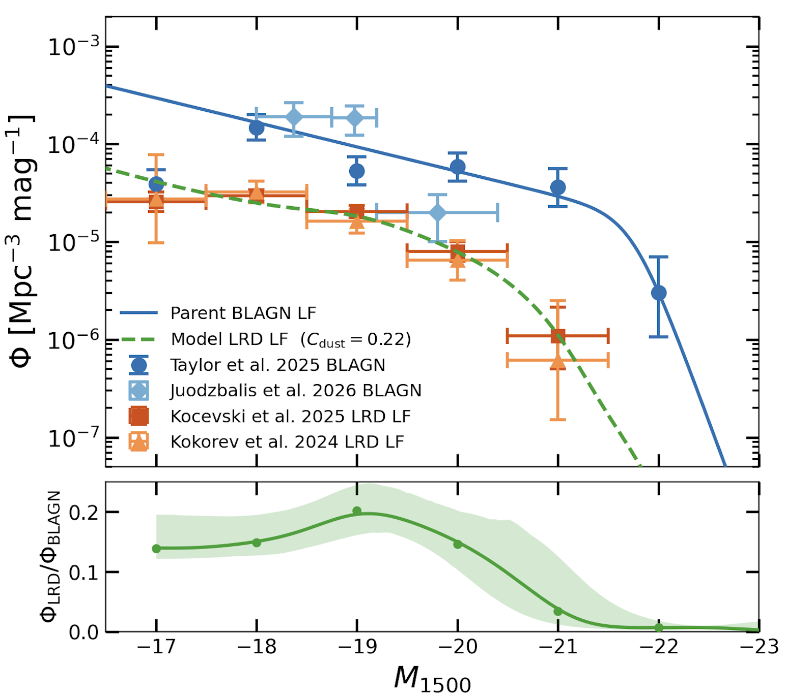
图注：Observed and model UV LFs of LRDs and their parent BLAGN population. The upper panel shows the fixed double-power-law parent BLAGN UV LF obtained by jointly fitting the spectroscopic BLAGN samples of \citet{Taylor2025_BHMF} (\(3.5
入选理由：这是最核心的人口统计检验图：上面板同时给出母体 BLAGN UV 光度函数、JWST LRD UV 光度函数数据点和前向模型预测曲线，可直接判断模型是否覆盖当前约束的 M1500 光度范围；下面板给出 Phi_LRD/Phi_BLAGN 随观测 M1500 的变化及95%置信带，正好检验日报强调的亮端约3%、M1500≈-19附近升至约20%的强光度依赖趋势。相比其他候选图，它同时承载光度函数拟合质量、相对丰度和置信区间信息，是解读本文主结论必选图。
来源与置信度：arxiv_source；high；arxiv_source / LF.tex:figure[1]
Fig02
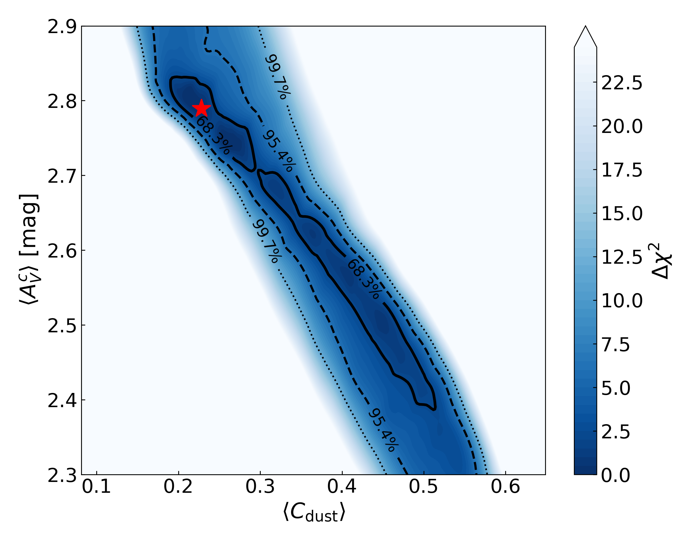
图注：Projected $\Delta\chi^2\equiv\chi^2-\chi^2_{\rm min}$ confidence contours in the $(\langle C_{\rm dust}\rangle,\langle A_V^c\rangle)$ plane, obtained from a 3D grid scan over $(\langle A_V^c\rangle,C_0,\sigma_{A_V^c})$ with $M_{\rm break}$ held fixed at its fiducial best-fit value, and projected by minimizing over $\sigma_{A_V^c}$ at each fixed $(\langle A_V^c\rangle,C_0)$. Here $\langle C_{\rm dust}\rangle$ is the number-density-weighted mean dust covering factor. Solid, dashed, and dotted contours denote the 68.3\%, 95.4\%, and 99.7\% confidence regions, respectively. The elongated confidence valley illustrates the trade-off between cloud extinction and obscured fraction: lower per-cloud extinction requires a larger dust covering factor to reproduce the observed LRD counts. The red star marks the global minimum of the 3D scan projected onto this plane.
对应解读：对应“建议重点查看的图表”第4项 参数约束图或置信区间，以及“模型拟合”中关于
入选理由：该图直接展示
来源与置信度：arxiv_source；high；arxiv_source / LF.tex:figure[2]
Fig03
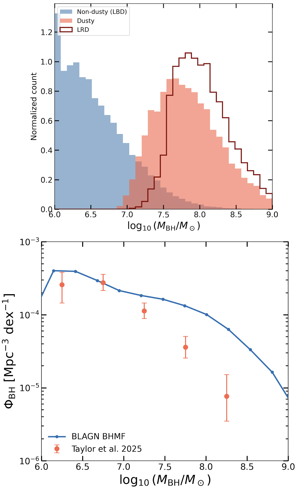
图注：Black-hole mass demographics implied by the best-fitting forward model. {\it Top panel:} normalized inferred mass distributions of unobscured (LBD-like) sightlines, all dust-intercepted sources, and the subset classified as photometric LRDs. {\it Bottom panel:} black-hole mass function implied by the same mock BLAGN population after the iterative inversion from the observed compact BLAGN UV LF. Red points show the BLAGN BHMF inferred by \citet{Taylor2025_BHMF} from single-epoch virial mass estimates based on broad H$\alpha$ emission.
对应解读：对应“建议重点查看的图表”第5项 模拟样本的黑洞质量分布，以及“关键图表逐图导读”中关于黑洞质量或内禀分布比较的解读。
入选理由：该图上面板比较 unobscured/LBD-like 视线、所有被尘埃截获源和 photometric LRD 子样本的归一化黑洞质量分布，下面板给出同一模拟母体反演得到的黑洞质量函数并与 Hα virial 质量估计比较。它直接支撑日报中的重要解释：UV-selected LRD 的较高黑洞质量偏移主要来自尘埃衰减和通量限制造成的选择效应，而不是必须引入独立、更重的 LRD 母体族群。
来源与置信度：arxiv_source；high；arxiv_source / LF.tex:figure[3]
强相关工作
这篇文章与 JWST 发现 LRD 后的一系列观测论文直接相关，尤其是关于高红移紧致红源的宽线、SED 分解、黑洞质量估计和数密度统计。相似工作常用 JWST/NIRCam 颜色选择和 NIRSpec 光谱确认来判断这些源是否为 AGN、极端星暴或二者混合。检索关键词可用 “JWST little red dots broad line AGN”, “compact red sources high redshift JWST”, “NIRSpec broad Halpha little red dots”, “high redshift low luminosity AGN luminosity function”。
理论背景上，它延续了经典 AGN orientation unification，但把它推进到宇宙黎明的低质量、快速吸积黑洞环境。与传统 dusty torus 模型不同，本文更强调超爱丁顿吸积流的几何厚度、各向异性辐射和赤道宽线区。可检索 “AGN unification orientation dusty torus”, “super-Eddington accretion anisotropic emission”, “slim disk high redshift black holes”。
潜在张力来自两方面。第一，一些 LRD 的 X 射线弱、红外弱或 SED 可由恒星成分解释，这可能挑战“多数都是遮蔽 AGN”的简单说法。第二，virial 黑洞质量若系统偏高或宽线并非标准 BLR 起源，则 LRD 的黑洞质量和 Eddington ratio 解释会改变。检索关键词可用 “little red dots X-ray weak”, “overmassive black holes JWST little red dots”, “stellar population interpretation little red dots”, “broad line virial mass orientation bias high redshift AGN”。
相似工作：
- https://arxiv.org/abs/2605.05074
- https://arxiv.org/search/astro-ph?query=%22little+red+dots%22&searchtype=all
- https://ui.adsabs.harvard.edu/search/q=%22little%20red%20dots%22%20JWST
基础理论 / 方法工作：
- https://ui.adsabs.harvard.edu/abs/1993ARA%26A..31..473A/abstract
- https://ui.adsabs.harvard.edu/abs/1973A%26A....24..337S/abstract
- https://ui.adsabs.harvard.edu/search/q=%22AGN%20unification%22%20orientation%20torus
- https://ui.adsabs.harvard.edu/search/q=%22super-Eddington%20accretion%22%20%22slim%20disk%22
相反观点 / 张力线索：
- https://ui.adsabs.harvard.edu/search/q=%22little%20red%20dots%22%20%22X-ray%22
- https://ui.adsabs.harvard.edu/search/q=%22little%20red%20dots%22%20%22stellar%20population%22
- https://ui.adsabs.harvard.edu/search/q=%22JWST%22%20%22overmassive%20black%20holes%22%20%22broad%20line%22
说明
评分由 LLM 给出初评，再由本地阈值策略过滤；IACT / 大气切伦科夫望远镜相关论文按 HE 同等优先级处理，其他非 HE 论文需要明显关联高能天文、宇宙线、伽马射线或仪器/方法价值才会保留。